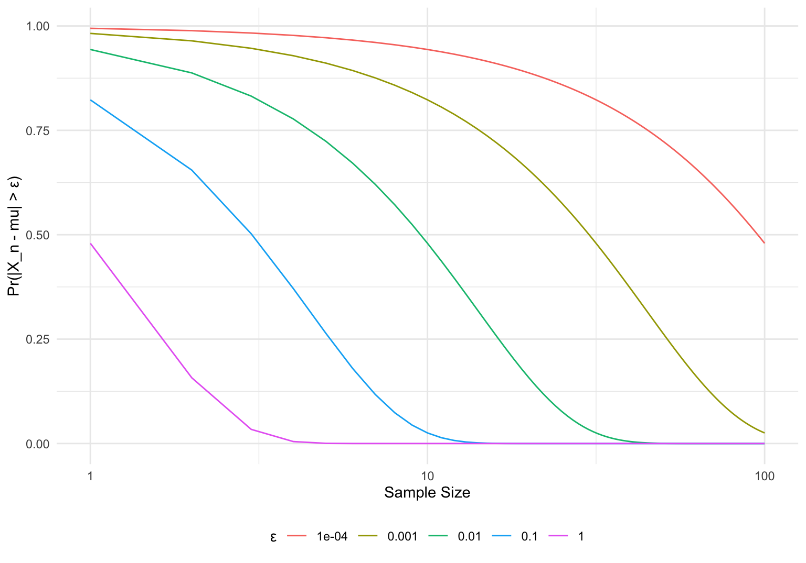
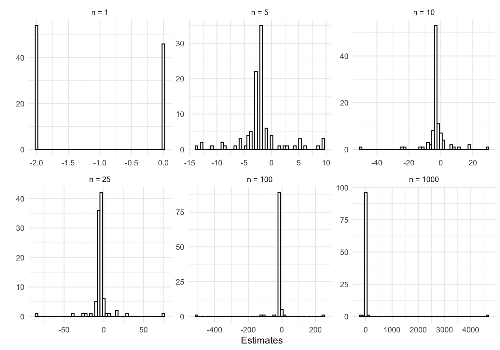
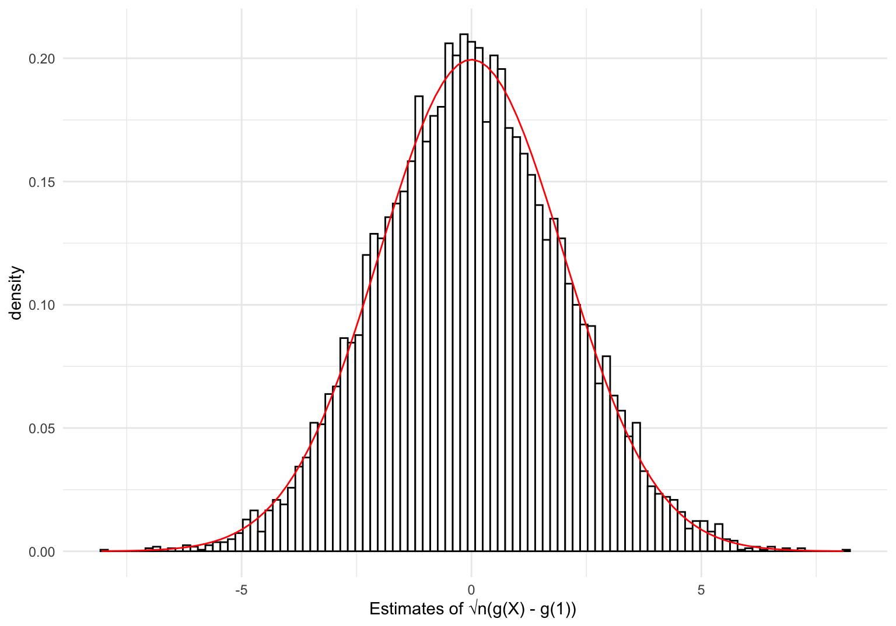

When considering estimators in sec-est, we kept the sample size \(n\) fixed when assessing estimators. We now consider how estimators behave as \(n\to\infty.\) In practice, we will never have infinite data, asymptotics gives us an approximate idea of how estimators perform for large data sets. A comprehensive reference in asymptotic theory is due to Van der Vaart (2000). For a treatment concerned purely with econometrics, Newey and McFadden (1994) provide a phenomenal survey, most of which we will touch on when discussing general classes of estimators.
With loss of some generality, we will assume that all random variables have finite expectation and variances. Dispensing with this assumption is something for a probability course.
2.1 Convergence
At some point in high school, most students encounter the concept of a numeric sequence, and how they can converge to a limit. Later on, perhaps when taking a real analysis course, sequences are generalized to spaces of functions. A sequence of functions may also converge to a limit, whether that be converging pointwise and/or converging uniformly (for details see Rudin (1976)). Random variables are functions from a sample space to \(\mathbb R\), so we can consider how these functions converge.
2.1.1 Convergence in MSE
The first type of convergence we’ll work with deals with MSE.
Definition 2.1 A sequence of random variables \(X_n\)converges in mean square to a random variable \(X\), written as \(X_n\overset{ms}{\to} X\), if \[\lim_{n\to\infty} \text{E}\left[(X_n - X)^2\right] = 0.\] A sequence of random vectors \(\mathbf{X}_n = (X_{1,n},\ldots X_{k,n})\) converges in mean square to \(\mathbf{X}\) if \(X_{i,n}\overset{ms}{\to} X_i\) for \(i=1,\ldots, k\).
\(X_n \overset{ms}{\to}X\) if the average distance between \(X_n\) and \(X\) shrinks as \(n\to\infty\) where distance is measured as \((X_n - X)^2\). We can also have \(X_n \overset{ms}{\to}c\) for some constant \(c\), as \(c\) is a trivial random variable.
Example 2.1 Suppose we draw a sample of \(n\) iid random variables \(Z_i\) and define \(X_n\) to be the sample mean of our observations. \[X_n = \frac{1}{n}\sum_{i=1}^n Z_i\] If \(\text{E}\left[Z_i\right] = \mu\) and \(\text{Var}\left(Z_i\right) = \sigma^2\) for all \(i\), we have \(X_n\overset{ms}{\to}\mu\): \[\begin{align*}
\lim_{n\to\infty}\text{E}\left[(X_n - \mu)^2\right] & = \lim_{n\to\infty}\text{Var}\left(X_n\right) + \text{Bias}(X_n) \\
&= \lim_{n\to\infty} \frac{\sigma^2}{n} + 0 & (X_n \text{ unbiased}) \\
& = \lim_{n\to\infty} \frac{\sigma^2}{n} \\
& = 0.
\end{align*}\]
What does this convergence “look like”? If \(Z_i\overset{iid}{\sim}N(0,1)\), we know that \(X_n = \bar Z \sim N(\mu, \sigma^2/n)\). Let’s plot this distribution for increasing values of \(n\).
Show code which generates figure
expand_grid(x =seq(-3, 3, length =500),n =1:100) %>%mutate(y =dnorm(x, 0, sqrt(1/n)) ) %>%ggplot(aes(x,y)) +geom_line() +theme_minimal() +labs(x ="Value of X_n", y ="Density", color ="Sample Size") +theme(legend.position ="bottom") +transition_states(n) +labs(title ='n = {closest_state}')
Figure 2.1: The distribution of X_n for increasing values of n
This example betrays a useful property related to variables which converge in mean square.
Proposition 2.1 A sequence of random variables \(X_n\) converges in mean square to a constant \(c\)if and only if\(\text{E}\left[X_n\right]\to c\) and \(\text{Var}\left(X_n\right)\to 0\).
\((\Longleftarrow)\) Suppose \(\text{E}\left[X_n\right]\to c\) and \(\text{Var}\left(X_n\right)\to 0\). We have \[\begin{align*}
&\lim_{n\to\infty} \text{Var}\left(X_n\right) + \lim_{n\to\infty}\left[\text{E}\left[X_n\right] -c\right]^2 = 0 \\
\implies & \lim_{n\to\infty}\text{E}\left[(X_n - c)^2\right] = 0\\
\implies & X_n\overset{ms}{\to}c
\end{align*}\]
Corollary 2.1 Suppose \(X_n\) is a sequence of random variables such that \(\text{E}\left[X_n\right] = c\) for all \(n\). Then \(X_n\overset{ms}{\to}c\)if and only if\(\text{Var}\left(X_n\right)\to 0\).
2.1.2 Convergence in Probability
Convergence in mean square captures the idea that a random variable gets “closer” to some value \(c,\) but it is hardly the only way to define this behavior. A more “traditional” approach would be defining convergence using an inequality involving an arbitrarily small \(\varepsilon >0\) (akin the to \(\varepsilon-\delta\) definition of a limit).
Definition 2.2 A sequence of random variables \(X_n\)converges in probability to a random variable \(X\), written as \(X_n\overset{p}{\to}X\) or \(\mathop{\mathrm{plim}}X_n = X\), if \[\lim_{n\to\infty} \Pr (|X_n - X| > \varepsilon)= 0\] for all \(\varepsilon > 0\). Equivalently, \(X_n\overset{p}{\to}X\) if for all \(\varepsilon > 0\) and \(\delta > 0\), there exists some \(N\) such that for all \(n \ge N\), \[ \Pr (|X_n - X| > \varepsilon) < \delta.\] A sequence of random vectors \(\mathbf{X}_n = (X_{1,n},\ldots X_{k,n})\) converges in probability to \(\mathbf{X}\) if \(X_{i,n}\overset{p}{\to} X_i\) for \(i=1,\ldots, k\).
Intuitively, \(X_n \overset{p}{\to}X\) if the probability that the difference \(|X_n - X|\) is not small (greater than some \(\varepsilon\)) goes to zero as \(n\to\infty\). In other words, for large values of \(n\), there is a large probability that \(X_n\) is close to \(X\)
Example 2.2 Return to the previous example where \(X_n = \bar Z\), and assume \(Z_i \overset{iid}{\sim}N(\mu,\sigma^2)\). We will verify that \(X_n\overset{p}{\to}\mu\) using the definition of convergence in probability using the fact that \(X_n \sim N(\mu, \sigma^2/n)\).
Figure 2.2: For any arbitrary ε, we can find some n such that the probability X_n falls outside the set |μ-ε| is arbitrarily small
For some \(\varepsilon > 0\), \[\begin{align*}
\Pr (|X_n - \mu| > \varepsilon) & = 1 - \Pr (\mu - \varepsilon < X_n < \mu + \varepsilon)\\
& = 1 - (F_{X_n}(\mu + \varepsilon) + F_{X_n}(\mu - \varepsilon))\\
& = 1 - 2\left[F_{X_n}(\mu + \varepsilon) - \frac{1}{2}\right] & (F_{X_n} \text{symmetric about }\mu)\\
& = 1 - 2\left[\Phi\left(\frac{(\mu + \varepsilon) - \mu}{\sigma/\sqrt{n}}\right) - \frac{1}{2}\right] & (\Phi\text{ standard normal distribution})\\
& = 1 - 2\left[\Phi\left(\frac{\varepsilon}{\sigma/\sqrt{n}}\right) - \frac{1}{2}\right].
\end{align*}\] Given some \(\delta >0\), we can solve for the lowest value of \(n\) that satisfies \(\Pr (|X_n - c| > \varepsilon) < \delta\). \[\begin{align*}
&\Pr (|X_n - c| > \varepsilon) < \delta \\
\implies & 1 - 2\left[\Phi\left(\frac{\varepsilon}{\sigma/\sqrt{n}}\right) - \frac{1}{2}\right] < \delta \\
\implies& n > \left(\frac{\sigma \Phi^{-1}(1-\delta/2)}{\varepsilon}\right)^2
\\\implies & n > \left\lceil \left(\frac{\sigma \Phi^{-1}(1-\delta/2)}{\varepsilon}\right)^2 \right\rceil
\end{align*}\] Just to be excruciatingly pedantic, we rounded our solution up to the closest positive integer, as \(n\) corresponds to a sample size. For fixed values of \(\mu\) and \(\sigma^2\) (say 3 and 2, respectively), we can define a function of \((\varepsilon, \delta)\) which calculates the sample size required to satisfy \(\Pr(|X_n - c|>\varepsilon)<\delta\).
expand_grid(e =c(1, 0.1, 0.01, 0.001, 0.0001),n =1:1e6) %>%mutate(prob =map2_dbl(e, n, \(e, n) prob_ep(n, e, mu =3, sigma =sqrt(3)))) %>%ggplot(aes(n, prob, color =as.factor(e))) +geom_line() +scale_x_log10() +theme_minimal() +labs(x ="Sample Size", y ="Pr(|X_n - mu| > ε)", color ="ε") +theme(legend.position ="bottom")

Figure 2.4: The probability that X_n falls outside the interval |μ-ε| for various values of (ε,n)
How does convergence in mean square related to convergence in probability? As it turns out the latter is a weaker condition implied by the prior. Before stating and proving this result, we will need a lemma.
Lemma 2.1 (Markov’s inequality) If \(X\) is a nonnegative random variable, and \(a > 0\), then \[\Pr(X\ge a) \le \frac{\text{E}\left[X\right]}{a}\]
Proof. The expectation of \(X\) can be written as \[\begin{align*}
\text{E}\left[X\right] & = \int_{-\infty}^\infty x\ dF_X(x) \\
& = \int_{0}^\infty x\ dF_X(x) & (X\text{ is nonnegative}) \\
& = \int_{0}^a x\ dF_X(x) + \int_{a}^\infty x\ dF_X(x) \\
& \ge \int_a^\infty x\ dF_X(x)\\
& \ge \int_a^\infty a\ dF_X(x) & (a \ge x \text{ on }(a,\infty))\\
& = a \int_a^\infty\ dF_X(x) \\
& = a\Pr(X \ge a).
\end{align*}\] Dividing both sides of this inequality by \(a\) gives \(\Pr(X\ge a) \le \text{E}\left[X\right]/a\).
Proposition 2.2 (Convergence in MSE –> Convergence in Probability) Let \(X_n\) be a sequence of random variables. If \(X_n\overset{ms}{\to}X\), then \(X_n\overset{p}{\to}X\).
The usefulness of Proposition prp-conv cannot be emphasized enough. Proving convergence in probability using the definition is cumbersome, so we will almost show convergence in mean square and then appeal to Proposition prp-conv to verify convergence in probability. Nevertheless, situations can arise where \(X_n\overset{p}{\to} X\), but \(X_n \not\overset{ms}{\to} X\).
Example 2.3 (Convergence in Probability but not in Mean Square) Suppose \(X_n\) is defined on the sample space \(\{1,n^2\}\) such that: \[\begin{align*}
\Pr(X_n = 0) &= 1-1/n\\
\Pr(X_n = n^2) &= 1/n
\end{align*}\]
Show code which generates figure
expand_grid(n =1:50, x =0:1) %>%mutate(x = x*(n^2),p = (1-1/n)*(x ==0) + (1/n)*(x !=0) ) %>%ggplot(aes(x = x, y = p)) +geom_point() +geom_segment(aes(x = x, xend = x, y =0, yend = p)) +theme_minimal() +scale_x_sqrt(breaks = (1:10)*500) +labs(color ="n", y ="Probability Density", x ="X_n") +theme(legend.position ="bottom") +transition_states(n) +labs(title ='n = {closest_state}')
Figure 2.5: The probability density function associated with X_n for increasing values of n.
The expected value of \(X_n\) is \[\text{E}\left[X_n\right] = 0(1-1/n) + n^2(1/n) = n,\] so \(\text{E}\left[X_n\right]\to\infty\) as \(n\to \infty\). This rules out \(X_n\) converging in mean square to any value. Nevertheless, we have \(X_n\overset{p}{\to}0\). For all \(\varepsilon > 0\), \[\Pr(|X_n - 0| > \varepsilon) = \Pr(X_n \neq 0) = \Pr(X_n = n^2) = 1/n \to 0.\] This disagreement among definitions of convergence arises because the convergence in probability only takes into consideration the probability assigned to each value in the sample space, whereas convergence in MSE is based on an expectation which takes into consideration the probability assigned to each value in the sample space weighted by the value in the sample space. In this particular example, the probability that \(X_n = n^2\) is \(1/n\), and the growth of \(n^2\) as \(n\to \infty\) outpaces the growth of \(1/n\), so the expected value of \(X_n\) grows indefinitely.
Remark. We can think of the counterexample in Example exm-pnotmse arising from the “tail” of a density, where the “tail” happened to just be a single point because the random variable was discrete. This is a pattern that comes up often in asymptotics – the tails of distributions and densities can cause trouble. Many theorems and results depend on these tails behaving well.
2.1.3 Almost Sure Convergence
An third type of convergence is almost sure convergence. Recalling that a random variable is just a function, we can define a stochastic analog to pointwise convergence of a sequence of functions.
Definition 2.3 A sequence of random variables \(X_n\)converges almost surely to a random variable \(X\), written as \(X_n\overset{a.s}{\to}X\) if \[ \Pr \left(\lim_{n\to\infty} X_n = X\right) = 1.\] A sequence of random vectors \(\mathbf{X}_n = (X_{1,n},\ldots X_{k,n})\) converges almost surely to \(\mathbf{X}\) if \(X_{i,n}\overset{a.s}{\to} X_i\) for \(i=1,\ldots, k\).
Almost sure convergence is the probabilistic equivalent of a sequence of functions converging pointwise almost everywhere. The difference between \(X_n\overset{a.s}{\to} X\) and \(X_n\overset{p}{\to}X\) is subtle, and arises from the limit being taken before or after we take the probability of the event. While convergence in probability tells us that the chance that \(X_n\) and \(X\) are far approaches zero, almost sure convergence says that the probability that \(X_n\to X\) as \(n\to \infty\) is 1. We’re certain that \(X_n\) will eventually coincide with \(X\), although we don’t know when that will happen. The next example makes the difference between these two definitions a bit more concrete. Later on in Example exm-strongvsweak an illustration will be presented to distinguish the two definitions.
Example 2.4 (Convergence in Probability but not in Almost Surely) Define \(X_n\) on \(\{0,1\}\) such that: \[\begin{align*}
\Pr(X_n = 1) & = 1/n\\
\Pr(X_n = 0) & = 1-1/n
\end{align*}\] We have \(X_n\overset{p}{\to}0\) since \[ \lim_{n\to\infty}\Pr(|X_n - 0| > \varepsilon) = \lim_{n\to\infty}\Pr(X_n > \varepsilon) = \lim_{n\to\infty}\Pr(X_n = 1) = \lim_{n\to\infty} 1/n = 0\] for all \(\varepsilon > 0\). At the same time, we have \[\sum_{n=1}^\infty \Pr(X_n = 1) = \sum_{n=1}^\infty 1/n = \infty,\] so by a form of the Borel-Cantelli Lemma then \(X_n = 1\) occurs an infinite number of times. This rules out the possibility that \(\lim_{n\to\infty} X_n = 0\) with probability 1.
Proposition 2.3 (Convergence A.S -> Convergence in Probability) Let \(X_n\) be a sequence of random variables. If \(X_n\overset{a.s}\to X\) then \(X_n\overset{p}{\to}X\).
The proof of this result can be found in Van der Vaart (2000). Almost sure convergence is not nearly as important as convergence in probability when it comes to assessing estimators. In fact, Lehmann (1999) doesn’t even mention it in his treatment of asymptotic statistics. The math underlying almost sure convergence is also a bit complex, so the related proofs aren’t very informative and will be omitted.
2.1.4 Convergence in Distribution
The final notion of convergence we will use related to the probability distribution of random variables.
Definition 2.4 A sequence of random variables \(X_n\)converges in distribution (converges weakly) to a random variable \(X\), written as \(X_n \overset{d}{\to}X\), if \[\lim_{n\to\infty} F_{X_n}(x)= F_X(x)\] for all points \(x\) where \(F_{X}\) is continuous. In this case, we refer to \(F_X\) as the asymptotic distribution of \(X_n\), and write \(X_n \overset{a}{\sim}F_X\).1 A sequence of random vectors \(\mathbf{X}_n = (X_{1,n},\ldots X_{k,n})\) converges in distribution to \(\mathbf{X}\) if \(\lim_{n\to\infty} F_{\mathbf{X}_n}(x)= F_{\mathbf{X}}(x)\).
For our purposes, \(X_n\overset{d}{\to}X\) means the distribution of \(X_n\) can be approximated by \(F_X\), and this approximation becomes increasingly better as \(n\to\infty\).
Example 2.5 One example of convergence in distribution you may be familiar with deals with the student’s \(t-\)distribution where the degrees of freedom \(n\to\infty\). If \(X_n\sim t_n\), then \(X_n \overset{d}{\to}X\) where \(X\sim N(0,1)\).
Figure 2.6: The t-distribution converges to the standard normal distribution (represented by the dashed red line) as the degrees of freedom increase.
Proposition 2.4 (Convergence in Probability –> Convergence in Distribution) Let \(X_n\) be a sequence of random variables. If \(X_n\overset{p}{\to}X\), then \(X_n\overset{d}{\to}X\).
Proof. Suppose \(X_n\overset{p}{\to}X\) and let \(\varepsilon > 0\). We have, \[\begin{align*}
\Pr(X_n \le x) & = \Pr(X_n\le x \text{ and } X \le x + \varepsilon) + \Pr(X_n\le x \text{ and } X > x + \varepsilon) \\
& = \Pr(X \le x + \varepsilon) + \Pr(X_n - X\le x - X \text{ and } x - X < -\varepsilon)\\
& \le \Pr(X \le x + \varepsilon) + \Pr(X_n - X < -\varepsilon)\\
& \le \Pr(X \le x + \varepsilon) + \Pr(X_n - X < -\varepsilon) + \Pr(X - X_n > \varepsilon) \\
& = \Pr(X \le x + \varepsilon) + \Pr(|X_n - X| > \varepsilon)
\end{align*}\] Similarly, \[ \Pr(X \le x-\varepsilon) \le \Pr(X_n \le x) + \Pr(|X_n - X| > \varepsilon).\] We can use these inequalities to find an upper and lower bound of \(\Pr(X_n \le x)\):
This holds for all \(\varepsilon > 0\), so it must be the case that \(\lim_{n\to\infty} F_{X_n}(x) = F_X(x)\)
Of the different concepts of stochastic convergence, convergence in distribution is the weakest (as the alternate name weak convergence implies). If \(X_n \overset{d}{\to} X\), we’re not saying that \(X_n\) and \(X\) become close, or that the probability that \(X_n\) and \(X\) are close approaches 1. We’re saying that, given a common probability space \((\mathcal X, \mathcal F, P)\),2 that the distribution function \(F_{X_n}\) defined via the distribution \(P(X^{-1}(I))\)3 happens to converge to the same function corresponding to the random variable \(X\). Furthermore, the convergence of \(F_{X_n}\) to \(F_X\) only needs to occur at the points which \(F_X\) is continuous, and even then the convergence only needs to be pointwise (opposed to uniform).
:::
2.1.5 Putting the Pieces Together
The biggest takeaway from this should be the following relations: \[\begin{align*}
&X_n \overset{ms}{\to}X \implies X_n \overset{p}{\to}X \implies X_n \overset{d}{\to}X\\
&X_n \overset{a.s}{\to}X \implies X_n \overset{p}{\to}X
\end{align*}\]
2.2 Consistency
Our three modes of convergence were defined for any sequence of random variables. It should come as no surprise, considering the previous examples considering whether the sample mean converged, that we are interested in the convergence of estimators \(\hat\theta(\mathbf{X})\) as sample size increases. In particular we are interested in whether \(\hat\theta(\mathbf{X})\) converges to the constant \(\theta\in\Theta\) it is estimating.
Definition 2.5 An estimator \(\hat\theta\) is consistent (for estimand\(\theta\)) if \(\hat\theta \overset{p}{\to}\theta\).
We’ve already seen that \(\bar X\) is a consistent estimator for \(\mu\) when we take an iid sample from a normal distribution. Let’s investigate it’s variance-counterpart \(S^2\).
Example 2.6 For \(X_i \overset{iid}{\sim}N(\mu,\sigma^2)\), \(S^2 = \sum_{i=1}^n (X_i - \bar X)/(n-1)\) is an unbiased estimator for \(\sigma^2\). This estimator’s MSE (which is just its variance as it is unbiased) is \(2\sigma^4/(n-1)\) which converges to \(0\) as \(n\to\infty\), so \(S^2\) is consistent by Proposition prp-conv.
This example highlights the fact that proving an unbiased estimator is consistent is a matter of showing its variance converges to 0.
Corollary 2.2 Suppose \(\hat\theta\) is an unbiased estimator for \(\theta\). Then \(\hat\theta\) is consistent if and only if\(\text{Var}\left(\hat\theta\right)\to 0\).
A second type of convergence related to estimators pertains to the bias of an estimator. In sec-est we saw a few estimators that were biased, but this bias was such that it diminished as \(n\to\infty\). In effect, they were unbiased in an asymptotic sense.
Definition 2.6 An estimator \(\hat\theta\) is asymptotically unbiased if \(\lim_{n\to\infty}\text{Bias}(\hat\theta, \theta) = 0\).
For \(X_i \overset{iid}{\sim}N(\mu,\sigma^2)\), \(\hat\theta = \sum_{i=1}^n (X_i - \bar X)/n\) is a biased estimator for \(\sigma^2\). Its bias is \[\text{Bias}(\hat\theta, \sigma^2) = \frac{n-1}{n}\sigma^2 - \sigma^2.\] As \(n\to\infty\), this bias vanishes. To illustrate this, we can simulate estimates for various sample sizes, taking \(X_i \sim N(0,1)\).
draw_estimate <-function(theta, n, dist, dist_params, s){ X <-do.call(dist, append(n, dist_params)) output <-tibble(sample_size = n,iter_num = s,estimate =theta(X) )return(output)}draw_N_estimates <-function(theta, N, n, dist, dist_params){ output <-1:N %>%map_df(\(s) draw_estimate(theta, n, dist, dist_params, s)) return(output)}draw_N_estimates_over_n <-function(theta, N, n_vals, dist, dist_params){ output <- n_vals %>%map_df(\(n) draw_N_estimates(theta, N, n, dist, dist_params)) return(output)}results <-draw_N_estimates_over_n(theta =function(X){sum((X -mean(X))^2)/length(X)},N =1e6,n_vals =c(10, 25, 50, 100, 500),dist = rnorm,dist_params =list(mean =0,sd =1 ))#Print bias calculated over 1,000,000 simulationsresults %>%group_by(sample_size) %>%summarize(bias =mean(estimate) -1)
results %>%ggplot(aes(estimate, color =as.factor(sample_size))) +geom_density() +xlim(0,2) +theme_minimal() +theme(legend.position ="bottom") +labs(x ="Estimates of Variance, True Value = 1", y ="Density", color ="Sample Size")
Figure 2.7: As the sample size increases, the bias of our estimator converges to zero.
The estimator \(\hat\theta\) is also consistent, as it converges in mean square.
Asymptotic unbiasedness does not imply consistency, and consistency does not imply asymptotic unbiasedness.
Example 2.7 (Consistent, Not Asymptotically Unbiased) Recall that the sequence of discrete random variables \(X_n\) with denisty \[ f_{X_n}(x) = \begin{cases}1-1/n& x=0\\ 1/n & x = n^2 \end{cases}.\] We established that \(X_n\overset{p}{\to}0\), so an estimator with this distribution would be a consistent estimator for \(0\). Despite this, the estimator would not be asymptotically unbiased, as \(\text{E}\left[X_n\right] = n\), which tends to infinity as \(n\) grows.
Example 2.8 (Asymptotically Unbiased, Not Consistent) For \(X_i\overset{iid}{\sim}N(\mu,\sigma^2)\), define the estimator \(\hat\mu(\mathbf{X}) = X_1\). We simply take the first observation to be our estimate of \(\mu\). This estimator is unbiased, \[\text{E}\left[\hat\mu\right] = \text{E}\left[X_1\right] = \mu,\] so it is asymptotically unbiased. Nevertheless, the estimator fails to be consistent, as \[\lim_{n\to\infty} \Pr (|\hat\mu - \mu| > \varepsilon)= \lim_{n\to\infty} \left\{1 - 2\left[\Phi\left(\frac{\varepsilon}{\sigma}\right) - \frac{1}{2}\right]\right\} \neq 0 .\]
The incompatibility of asymptotic unbiasedness and consistency is due to the behavior of \(\text{Var}\left(X_n\right)\) as \(n\to\infty\).
Proposition 2.5 (Relating Consistency and Asymptotic Unbiasedness) Suppose \(\hat\theta\) is an estimator for \(\theta\).
If \(\hat\theta\) is consistent and there exists some \(M\) such that \(\text{Var}\left(\hat\theta\right) \le M\) for all \(n\) (bounded variance), then \(\hat\theta\) is asymptotically unbiased.
If \(\hat\theta\) is asymptotically unbiased and \(\lim_{n\to\infty}\text{Var}\left(\hat\theta\right) = 0\) (vanishing variance), then \(\hat\theta\) is consistent
Proof. test
Figure 2.8: Relationship between various concepts of convergence in the context of estimators
2.3 Laws of Large Numbers
In most examples until now, the properties of estimators were implicitly a function of the underlying model the data is generated from. We established that \(\bar X\) and \(S^2\) are consistent estimators for \(\mu\) and \(\sigma^2\), respectively, when\(X_i \overset{iid}{\sim}N(\mu,\sigma^2)\). We know the distribution of \(\bar X\), when\(X_i \overset{iid}{\sim}N(\mu,\sigma^2)\). In an ideal world, we would be able to establish desirable properties of estimators under more robust settings where our specified model may include a wide array of distributions. Our first step in doing this will be introducing variants of one of the most important results in all of probability – the law of large numbers (LLN). In the context of estimation, LLNs give sufficient conditions for our favorite estimator, \(\bar X\), to be consistent.
2.3.1 Khinchine’s Weak Law of Large Numbers
The version of the LLN we’ll use the most often deals with convergence in probability. To prove that \(\bar X \overset{p}{\to}\mu\) we’ll rely on an inequality similar to Lemma lem-markovineq.
Lemma 2.2 (Chebyshev’s Inequality) If \(X\) is a random variable with an expected value \(\mu\) and variance \(\sigma^2\), then for all \(a > 0\)\[\Pr(|X - \mu| \ge k) \le \frac{\sigma^2}{k^2}.\]
Theorem 2.1 (LLN I) If \((X_1,\ldots, X_n)\) are a set of iid random variables where \(\text{E}\left[X_i\right] = \mu\), then \(\bar X \overset{p}{\to}\mu\).
Example 2.9 To illustrate the LLN, let’s simulate realizations of iid random variables from a series of different distributions and show that regardless of the distribution, \(\bar X \to \mu\). We will use the following distributions: \[\begin{align*}
X_i & \overset{iid}{\sim}\text{Exp}(1/\mu)\\
X_i & \overset{iid}{\sim}\chi_\mu^2\\
X_i & \overset{iid}{\sim}\text{Uni}(0, 2\mu)\\
X_i & \overset{iid}{\sim}\text{Gamma}(2\mu, 2)\\
X_i & \overset{iid}{\sim}\text{HyperGeo}(10, 20, 15\mu)
\end{align*}\] All these distributions have been selected such that \(\text{E}\left[X_i\right] = \mu\). For our simulations, we will take \(\mu = 5\). If we plot the value of the sample mean versus the sample size \(n\), we see that the values converge to the true value \(\mu = 5\) regardless of the distribution of \(X_i\).
Figure 2.9: The sample mean of all samples converges to the population mean by the LLN
For the sake of an even better illustration, let’s focus on the case where \(X_i \overset{iid}{\sim}\text{Exp}(1/\mu)\) where \(\mu = 5\). We’ll draw 10,000 samples of \(X_i\), and calculate \(\bar X\) for each sample as the sample size ranges from 1 all the way to 1,000.
Figure 2.10: 10,000 lines, each of which corresponds to a simulated realization of the sample mean over a range of sample sizes. The area within the red dashed lines is the set |μ - Sample Mean| < 0.5
The weak LLN tells us that since \(\bar X\overset{p}{\to}5\), then by the definition of convergence in probability, the probability one of the lines falls in Figure fig-plot28.2 outside the interval within the red dashed lines at a particular sample size \(n\) approaches zero as \(n\to \infty\). Furthermore, this will hold regardless of how close we make the red lines to the true value \(\mu = 5\). For the sake of illustration we took \(\varepsilon = 0.5\), but it will hold for all\(\varepsilon > 0\). In fact, we can go one step further and illustrate \(\Pr(|\bar X-\mu| > \varepsilon)\) by looking at the proportion of times that \(|\bar X-\mu| > \varepsilon\) holds across out 10,000 simulations. We’ll do this for \(\varepsilon=0.5,0.6,\ldots,1\).
Figure 2.11: For each ε, the observed probability in question approaches 0 as the sample size grows.
Example 2.10 (Monte Carlo Simulations) In Example exm-var we performed a Monte Carlo simulation to illustrate the bias of \(\hat\theta(\mathbf{X}) = \sum_{i=1}^n (X_i - \bar X)/n\) and unbiasedness of \(S^2\). We did this by fixing \(n=20\), drawing a random sample, recording estimates \(\hat\theta(\mathbf{x})\) and \(S^2(\mathbf{x})\), and repeating this \(k\) times. This is nothing more than drawing \(j=1,\ldots,k\) observations from the random variables \(\hat\theta(\mathbf{X})\) and \(S^2(\mathbf{X})\). By the LLN, \[\begin{align*}
\frac{1}{k}\sum_{i=1}^k \hat\theta_j(\mathbf{x}) &\overset{p}{\to}\text{E}\left[\hat\theta(\mathbf{X})\right],\\
\frac{1}{k}\sum_{i=1}^k S_j^2(\mathbf{x}) &\overset{p}{\to}\text{E}\left[S^2(\mathbf{X})\right],
\end{align*}\] so for a large enough \(k\), we can approximate the expected value with its sample counterpart.
2.3.2 Kolmogorov’s Strong Law of Large Numbers
A stronger version of the LLN is stated in terms of almost sure convergence. Since almost sure convergence is stronger than convergence in probability (which is all that is needed for an estimator to be consistent), this version is referred to as the “strong” LLN.
Theorem 2.2 (LLN II) If \((X_1,\ldots, X_n)\) are a set of iid random variables where \(\text{E}\left[X_i\right] = \mu\), then \(\bar X \overset{as}{\to}\mu\).
Proof. See the proof of Theorem 6.1 in Billingsley (2008).
Example 2.11 (Strong vs Weak LLN) We can actually visualize the difference between the strong and weak LLNs, and in doing so highlight the difference between almost sure convergence and convergence in probability. Like Example exm-lln1, assume \(X_i \sim\text{Exp}(1/\mu)\) where \(\mu = 5\). We’ll perform a similar simulation to that which gave Figure fig-plot28.2, but this time we’ll only look at one sample of \(X_i\) (instead of 10,000).
Figure 2.12: A single simulation realization of the sample mean over a range of sample sizes. The area within the red dashed lines is the set |μ - Sample Mean| < 0.5
The strong LLN tells us that for some finite sample size \(N\) the line in Figure fig-plot28.4 will fall within the red lines for all \(n > N\).
2.3.3 Chebyshev’s Weak Law of Large Numbers
The crucial assumption made by both LLNs up to this point is that \(\bar X\) is calculated with an iid random sample. If we drop this assumption, then \(\bar X\) needn’t estimate \(\mu\) consistently.
Example 2.12 (LLN Failing with Non-IID Data) Suppose \(\mathbf{X}= (X_1, \ldots, X_n)\) where \(X_i \sim N(-1, i)\) if \(i\) is odd, and \(X_i \sim N(1,i)\) is \(i\) is even. The data is independent, but not identically distributed. If some LLN would hold here, we would suspect that \(\bar X\) would converge \(0\) since the average of the underlying population means \(1\) and \(-1\). Let’s simulate \(\bar X\) for \(n\) ranging from 1 to 100,000.
Figure 2.13: The sample mean of non-IID data does not satisfy the LLN
The proof of the LLN relied on Chebyshev’s equality and the fact that \(\text{Var}\left(\bar X\right) = \sigma^2/n \to 0\) when \(\text{Var}\left(X_i\right) = \sigma^2\). Perhaps if we added an assumption regarding the variance of a non-iid sample, then we could salvage a result similar to the LLN. This is precisely what Chebyshev’s LLN does.
Proposition 2.6 (Chebyshev’s (Weak) Law of Large Numbers) Suppose \((X_1,\ldots, X_n)\) are a sample such that \(\text{E}\left[X_i\right] = \mu_i\), \(\text{Cov}\left(X_i, X_j\right) = \sigma_{ij}^2\), and \(\lim_{n\to\infty}\frac{1}{n^2}\sum_{i=1}^n \sigma_{ij}^2 =0\). If \(\frac{1}{n}\sum_{i=1}^n\mu_i \overset{p}{\to}\mu\), then \(\bar X \overset{p}{\to}\mu\).
Proof. The expected value of \(\bar X\) is \[\text{E}\left[\bar X\right] = \frac{1}{n}\sum_{i=1}^n\text{E}\left[X_i\right]= \frac{1}{n}\sum_{i=1}^n\mu_i \overset{p}{\to}\mu.\] The variance is \[ \text{Var}\left(\bar X\right) = \text{Var}\left(\frac{1}{n}\sum_{i=1}^nX_i\right) = \frac{1}{n^2}\sum_{i=1}^n\sum_{j=1}^n\text{Cov}\left(X_i,X_j\right) = \frac{1}{n}\sum_{i=1}^n \sigma_{ij}^2\to 0.\] By Proposition Proposition prp-mse3, \(\bar X\overset{ms}{\to}\mu\), so \(\bar X \overset{p}{\to}\mu\).
Corollary 2.3 Suppose \((X_1,\ldots, X_n)\) are an independent sample such that \(\text{E}\left[X_i\right] = \mu_i\), \(\text{Var}\left(X_i\right) = \sigma_{i}^2\), and \(\lim_{n\to\infty}\frac{1}{n^2}\sum_{i=1}^n \sigma_i^2 =0\). If \(\frac{1}{n}\sum_{i=1}^n\mu_i \overset{p}{\to}\mu\), then \(\bar X \overset{p}{\to}\mu\).
Proof. If the sample is independent, then \[\frac{1}{n^2}\sum_{i=1}^n\sum_{j=1}^n\text{Cov}\left(X_i,X_j\right) =\frac{1}{n^2}\sum_{i=1}^n\text{Var}\left(X_i\right). \]
The reason our non-iid sample in Example Example exm-noiid did not converge was because \[ \frac{1}{n^2}\sum_{i=1}^n \sigma_i^2 = \frac{1}{n^2}\sum_{i=1}^n i = \frac{1}{n^2}\frac{n(n+1)}{2} = \frac{n^2 + n}{2n^2} \to \frac{1}{2} \neq 0.\] Let’s modify it slightly so the sum of the variances does converge to zero.
Example 2.13 (LLN with Non-IID Data) Suppose \(\mathbf{X}= (X_1, \ldots, X_n)\) where \(X_i \sim N(-1,i^{-1})\) if \(i\) is odd, and \(X_i \sim N(1,i^{-1})\) is \(i\) is even. Now we have \[\lim_{n\to\infty}\frac{1}{n^2}\sum_{i=1}^n \sigma_i^2 = \left[\lim_{n\to\infty}\frac{1}{n^2}\right]\sum_{i=1}^\infty i^{-1} \to 0 .\]
Figure 2.14: Despite the data not being IID, the sample mean still converges to the population mean because the variance shrinks in the correct way.
2.4 The Continuous Mapping Theorem and Slutsky’s Theorem
At first glance, the LLN may not seem especially useful as it only applies to the sample mean. However, when paired with two key results about convergence, the LLN becomes an indispensable tool to analyze the convergence of many random variables and estimators. The first of these is an extension of a key result in real analysis. A useful, and defining property, of continuous functions is that they preserve limits of numeric sequences. If \(\{a_n\}\) is a numeric sequence, then \[\lim_{n \to\infty} f(a_n) = f\left(\lim_{n\to\infty} a_n\right) \iff f\text{ continuous}.\]
Theorem 2.3 (Continuous Mapping Theorem I) Suppose \(X_n \overset{p}{\to}X\), and let \(g\) be a continuous function. Then \[g(X_n)\overset{p}{\to}g(X).\] In other words we are able to interchange the \(\mathop{\mathrm{plim}}\) operator with a continuous function: \[\mathop{\mathrm{plim}}g(X_n) = g\left(\mathop{\mathrm{plim}}X_n\right).\]
The proof of this result can be found in Van der Vaart (2000). An immediate corollary follows from the fact that convergence in probability implies convergence in distribution.
Corollary 2.4 (Continuous Mapping Theorem II) Suppose \(X_n \overset{p}{\to}X\), and let \(g\) be a continuous function. Then \[g(X_n)\overset{d}{\to}g(X)\]
An equally useful result involves the limit of a sums and products of convergent random variables.
Theorem 2.4 (Slusky’s Theorem) Let \(X_n\) and \(Y_n\) be sequences of random variables. If \(X_n\overset{d}{\to}X\) for some random variable \(X\), and \(Y_n\overset{p}{\to}c\) for some constant \(c\), then \[\begin{align*}
X_n + Y_n &\overset{d}{\to}X + c\\
X_nY_n & \overset{d}{\to}Xc.
\end{align*}\] Furthermore, if \(c\neq 0\), \[ X_n/Y_n \overset{d}{\to}X/c.\]
Proof. Define a random vector to be \(\mathbf Z_n = (X_n,Y_n)\). We have \(\mathbf Z_n \overset{d}{\to}(X,c)\) as \(X_n\overset{d}{\to}X\) and \(Y_n \overset{d}{\to}c\) (convergence in probability implies convergence in distribution). We can apply the continuous mapping theorem to \(g(x,y) = x + y\), \(g(x,y)=xy\), and \(g(x/y)\) to establish the result.
Slutsky’s theorem can be a bit hard to remember because it involves a sequence of random variable which converges in distribution to a random variable, and a sequence of random variables which converges in probability to a constant. These asymmetries in mode of convergence and the type of limit are essential, otherwise the result will not hold. Fortunately, the result does hold if we replace all convergences in distribution with convergence in probability (as the later implies the prior).
Example 2.14 Suppose \(X_n \sim\text{Uni}(0,1)\) and \(Y_n = - X_n\). We have \(X_n \overset{d}{\to}\text{Uni}(0,1)\) and \(Y_n \overset{d}{\to}\text{Uni}(-1,0)\). Despite this \(X_n + Y_n = 0 \not\overset{d}{\to}\text{Uni}(0,1) + \text{Uni}(-1,0).\)
Example 2.15 (Consistency of Sample Variance)Example exm-consvarnorm showed that \(S^2\) is a consistent estimator for \(\sigma^2\) when \(X_i\overset{iid}{\sim}N(\mu,\sigma^2)\). We can use the continuous mapping theorem, Slutsky’s theorem, and the LLN to show that \(S^2\) is consistent regardless of the distribution of our iid sample. Suppose \(\text{E}\left[X_i\right] = \mu\), \(\text{E}\left[X_i^2\right]=\mu_2\), and \(\text{E}\left[X_i^4\right]=\mu_4\) for all \(i\). If we define our continuous function to be \(g(x) = x^2\), then \[\begin{align*}
S^2 & = \frac{1}{n-1} \sum_{i=1}^nX_i - \frac{1}{n-1} \sum_{i=1}^n\bar X^2 \\
& = \frac{1}{n-1} \sum_{i=1}^nX_i^2 + \frac{n}{n-1}\bar X^2 \\
& = \frac{n}{n-1}\left[\frac{1}{n}\sum_{i=1}^{n}X_i^2 - \left(\frac{1}{n}\sum_{i=1}^{n}X_i\right)^2\right]
\end{align*}\] The first term in the brackets is an unbiased estimator of \(\mu_2\) with vanishing variance, so by Proposition prp-consbias it is a consistent estimator for \(\text{E}\left[X^2\right]\): \[\begin{align*}
\text{E}\left[\frac{1}{n}\sum_{i=1}^{n}X_i^2\right] &= \frac{1}{n}\left(n \mu_2\right) = \mu^2\\
\lim_{n\to\infty}\text{Var}\left(\frac{1}{n}\sum_{i=1}^{n}X_i^2\right) & = \lim_{n\to\infty}\frac{1}{n^2}n\left(\text{E}\left[X_i^4\right] - \text{E}\left[X_i^2\right]^2 \right) = \lim_{n\to\infty}\frac{\mu_4 + \mu_2^2}{n} = 0
\end{align*}\] The second term in the brackets can be written as \(g(\bar X)\), so by the continuous mapping theorem and the LLN, \[ g(\bar X) = \left(\frac{1}{n}\sum_{i=1}^{n}X_i\right)^2 \overset{p}{\to}\mu^2 = g(\mu).\] So \[S^2= \underbrace{\frac{n}{n-1}}_{\to 1}\Bigg[\underbrace{\frac{1}{n}\sum_{i=1}^{n}X_i^2}_{\overset{p}{\to}\mu_2} - \underbrace{\left(\frac{1}{n}\sum_{i=1}^{n}X_i\right)^2}_{\overset{p}{\to}\mu^2} \Bigg].\] We can apply Slutsky’s theorem to the sum of sequences of random variables which converge in probability to constants, so \[ S^2 \overset{p}{\to}\mu_2 - \mu^2 = \sigma^2,\] making \(S^2\) consistent.
2.5 Central Limit Theorems
The LLN told us that our favorite estimator for \(\mu\), \(\bar X\), is consistent. We know turn to what is perhaps an even more important result regarding \(\bar X\), one that may in fact be the most important results in all of probability – the asymptotic distribution of \(\bar X\) is a normal distribution.
2.5.1 Lindeberg-Lévy CLT
The classic version of the CLT is formally known as the Lindeberg-Lévy CLT, and is likely familiar.
Theorem 2.5 (CLT I) Suppose \(\mathbf{X}=(X_1,\ldots, X_n)\) is a sequence of random variables with \(\text{E}\left[X_i\right]=\mu\) and \(\text{Var}\left(X_i\right)=\sigma^2\). Then \[\sqrt{n}(\bar X - \mu) \overset{d}{\to}N(0,\sigma^2),\] which is also often written as \[\bar X\overset{d}{\to}N(\mu, \sigma^2/n),\] or \[\sum_{i=1}^n X_i \overset{d}{\to}N(n\mu, \sqrt n \sigma^2) \]
The proof is a bit technical and requires some measure-theoretic based probability theory. It can be found in Billingsley (2008) or Durrett (2019).
Example 2.16 Suppose we have an iid sample from \(\text{Exp}(1)\). If we simulate 1000 realizations of \(\sqrt n(\bar X - \mu)\) for various sample sizes, we should see that the distribution of our realizations becomes approximately normal as we increase the sample size.
Even for modest values of \(n\), we can see that \(\sqrt n(\bar X - \mu) \overset{a}{\sim}N(0, \sigma^2)\).
Show code which generates figure
results %>%ggplot(aes(estimate)) +geom_histogram(aes(y =after_stat(density)), color ="black", fill ="white", bins =50) +theme_minimal() +geom_function(fun = dnorm, colour ="red") +transition_states(sample_size) +labs(title ='Sample Size: {closest_state}', x ="Estimates", y ="")
Figure 2.15: As the sample size increases, the distribution of the adjusted sample mean looks more and more like the standard normal.
An alternate way to visually test whether our estimates are normally distributed is with a quantile-quantile plot (QQ-plot), which graphs the observed quantiles of our estimates against the theoretical quantiles of a normal distribution (or those of any distribution we suspect our data is drawn from). If our estimates are (approximately) normally distributed, then the observed quantiles should be approximately equal to the theoretical quantiles of a normal distribution, forming a 45-degree line.
Show code which generates figure
results %>%ggplot(aes(sample = estimate)) +stat_qq_line(color ="red") +geom_qq(size=0.5) +theme_minimal() +transition_states(sample_size) +labs(title ='Sample Size: {closest_state}', x ="Quantiles of Simulated Estimates", y ="Quantiles of Normal Distribution")
Figure 2.16: The QQ-plot for the simulated distribution of the adjusted sample mean
The central limit theorem is similar to the LLN insofar that they only concern the estimator \(\bar X\), so how useful can they really be? Well with the continuous mapping theorem and Slutsky’s theorem, the answer is very useful!
Example 2.17 In Example exm-tdist we illustrated the fact that \(X_n \overset{d}{\to}N(0,1)\) where \(X_n \sim t_n\), but we didn’t actually prove it. Directly proving this result is a matter of verify that \[\lim_{n\to\infty} F_{X_n}(x) =\lim_{n\to\infty}\int_{-\infty}^x \frac{\Gamma\left(\frac{n+1}{2}\right)}{\Gamma\left(\frac{n}{2}\right)\sqrt{n\pi}}\left(1 + \frac{x^2}{n}\right)^{-\frac{n+1}{2}} = \frac{1}{\sqrt{2\pi}}\int_{-\infty}^x e^{-x^2/2} = F_X(x)\] where \(\Gamma\) is the gamma function defined as \[\Gamma(t) = \int_0^\infty s^{t-1}e^{-s}\ ds.\] A much easier way to prove that \(X_n \overset{d}{\to}N(0,1)\), is by using Slutsky’s theorem and the continuous mapping theorem. First recall that \[\frac{\bar X - \mu}{S/\sqrt n} \sim t_n,\] so we can write \(X_n\) as \(X_n = \frac{\bar X - \mu}{S/\sqrt n}\) due to the fact that random variables are uniquely determined by their distributions. From Example exm-consvarnorm, we have \(S^2 \overset{p}{\to}\sigma^2\). By the continuous mapping theorem \[ \sqrt{S^2} = S \overset{p}{\to}\sigma = \sqrt{\sigma^2},\] which gives \[ X_n = \frac{\bar X - \mu}{S/\sqrt n}= \underbrace{\sqrt{n}(\bar X - \mu)}_{\overset{d}{\to}N(0, \sigma^2)}\underbrace{\frac{1}{s}}_{\overset{p}{\to}\sigma}.\] Putting all the pieces together, Slutsky’s theorem yields \[X_n \overset{d}{\to}\frac{N(0,\sigma^2)}{\sigma} = N(0,1).\]
The CLT can be generalized to samples of random vectors \(\mathbf{X}_i\).
Theorem 2.6 Suppose \((\mathbf{X}_1,\ldots, \mathbf{X}_n)\) is a sequence of iid random vectors with \(\text{E}\left[\mathbf{X}_i\right]=\boldsymbol\mu\) and \(\text{Var}\left(\mathbf{X}_i\right)=\boldsymbol\Sigma\). Then \[\sqrt{n}(\bar {\mathbf{X}}- \boldsymbol\mu) \overset{d}{\to}N(\mathbf{0},\boldsymbol\Sigma).\]
2.5.2 Not Identically Distributed
Proposition prp-chebylln allowed us to salvage a LLN when the iid assumption failed, so can we do the same with the CLT? Sort of. While we need an independent sample, we don’t necessarily need realizations to be drawn from an identical distribution. Instead, the theorem will rely on the tails of distributions meeting a certion criterion. This version of the CLT is known as the Lindeberg-Feller CLT.
Theorem 2.7 (Lindeberg-Feller CLT) Suppose \(\mathbf{X}=(X_1,\ldots, X_n)\) is a sequence of independent random variables with \(\text{E}\left[X_i\right]=\mu_i\) and \(\text{Var}\left(X_i\right)=\sigma_i^2\), and define \[\begin{align*}
\bar \mu = \frac{1}{n}\sum_{i=1}^n\mu_i;\\
\bar \sigma_n^2 = \frac{1}{n}\sum_{i=1}^n\sigma_i^2.
\end{align*}\] If the collection of variances \(\sigma_i^2\) satisfies: \[\begin{align*}
\lim_{n\to\infty} &\frac{\max\{\sigma_i\}}{n\bar\sigma} = 0;\\
\lim_{n\to\infty} &\bar\sigma_n^2 = \bar\sigma^2,
\end{align*}\] then \(\sqrt n (\bar X-\mu)\overset{d}{\to}N(0, \bar\sigma^2).\)
Example 2.18 (Lindeberg’s Condition) The Lindeberg-Feller conditions stipulates that \(\lim_{n\to\infty}\bar\sigma_n^2 = \bar\sigma^2\) and \(\lim_{n\to\infty} \frac{\max\{\sigma_i\}}{n\bar\sigma} = 0\), a condition known as the Lindeberg’s condition. The condition is often presented in more general terms, but the intuition remains the same. For the CLT to hold for random variables that with different variances, we need to makes sure that no single term \(\sigma_i\) dominates the standard deviation. We can think about the sample mean \(\bar X\) as “mixing” many random variables \(X_i.\) After mixing these random variables, we hope to have a normal distribution, but that only happens if tails of the various distributions of \(X_i\) are negligible as \(n\to\infty\), giving us the trademark tails of a normal distribution which tapper off. Let’s consider a counterexample. Suppose \(X_i\) is defined on the sample space \(\{-i,0,i\}\) is distributed such that \[\Pr(X_i = k) = \begin{cases} 1/2i^2 & k = -i^2 \\ 1/2i^2 & k = i^2 \\ 1 - 1/i^2&k=0\end{cases}.\] Graphing the density function for a few values of \(i\) gives us a better sense of how \(X_i\) behaves.
As \(i\to\infty\), nearly all the probability is concentrated as \(k = 0\). The remaining probability is at the extreme tails of the distribution \(\pm i^2\), and these tails become more and more extreme (quadritically so) as \(i\to\infty\). This is the exact type of behavior Lindeberg’s condition rules out. The expectation, expectation squared, and variance of \(X_i\) are: \[\begin{align*}
\text{E}\left[X_i\right] & = (1/2i^2)(-i^2) + (1/2i^2)(i^2) + (1 - 1/i^2)(0) = 0\\
\text{E}\left[X_i^2\right] & = (1/2i^2)(i^4) + (1/2i^2)(i^4) + (1 - 1/i^2)(0) = i^2\\
\text{Var}\left(X_i\right) & = i^2 - 0^2 = i^2
\end{align*}\]
We can verify that Lindeberg’s condition does not hold. \[\begin{align*}
\lim_{n\to\infty}\bar \sigma_n = \lim_{n\to\infty}\frac{1}{n}\sum_{i=1}^n i^2 = \lim_{n\to\infty}\frac{(n+1)(2n+1)}{6} \to\infty
\end{align*}\]
To simulate realizations of this random variable, we can define \(X_i\) using \(U_i\sim\text{Uni}(0,1)\).4
draw_X <-function(n,...){ U <-runif(n) prob_pos_i <- (U <1/(2*(1:n)^2)) prob_neg_i <- (U >1/(2*(1:n)^2) & U <1/((1:n)^2)) (1:n)^2*prob_pos_i - (1:n)^2*prob_neg_i}results <-draw_N_estimates_over_n(theta =function(X){sqrt(length(X))*(mean(X) -1)},N =200,n_vals =c(1, 5, 10, 25, 100, 1000),dist = draw_X,dist_params =list(0))
Show code which generates figure
results %>%ggplot(aes(estimate)) +geom_histogram(color ="black", fill ="white", bins =50) +facet_wrap(~sample_size, scales ="free") +theme_minimal() +labs(x ="Estimates", y ="")

Figure 2.18: Histograms of estimates as sample size increases.
The apparent distribution of our estimates is not converging to a normal distribution, as we always have a few outliers that are too plentiful relative to their distance from the mean to be drawn from a normal distribution. As \(n\to\infty\) these outliers become even more extreme. This is also evident from QQ-plots, where the points far away from the 45-degree line are drawn even farther away as \(n\to\infty\).
Show code which generates figure
results %>%ggplot(aes(sample = estimate)) +stat_qq_line(color ="red") +geom_qq(size=0.5) +facet_wrap(~sample_size) +theme_minimal() +labs(x ="Quantiles of Simulated Estimates", y ="Quantiles of Normal Distribution")
Figure 2.19: The QQ-plot for the simulated distribution of the adjusted sample mean
While theoretically important, Lindeberg’s condition can be a bit hard to verify. It is much more common to appeal to a stronger assumption which gives rise to a second CLT that holds for independent, but not necessarily identically distributed, random variables. This final CLT may not be as general as the Lindeberg-Feller CLT, but it is much easier to work with.
Theorem 2.8 (Lyapunov CLT) Suppose \(\mathbf{X}=(X_1,\ldots, X_n)\) is a sequence of independent random variables with \(\text{E}\left[X_i\right]=\mu_i\) and \(\text{Var}\left(X_i\right)=\sigma_i^2\). If \(\text{E}\left[\left\lvert X_i - \mu_i\right\rvert^{2+\kappa}\right]\) is finite for some \(\kappa > 0,\) then \(\sqrt n (\bar X-\mu)\overset{d}{\to}N(0, \bar\sigma^2)\), where \(\bar\sigma = (1/n)\sum_{i=1}^n \sigma_i.\)
2.6 Delta Method
Slutsky’s theorem and the continuous mapping theorem in tandem with the LLN give us the ability to prove that certain functions of sample means are convergent. Is it possible that we can do something similar with the CLT to find the asymptotic distribution of functions of sample means?
Suppose \(g\) is a function of \(\bar X\), where a CLT applies to the random sample \(\mathbf{X}\). We know \(\sqrt n(\bar X-\mu)\overset{a}{\sim}N(0, \sigma^2)\). Is it possible to conclude that \(\sqrt n(g(\bar X)-g(\mu))\overset{a}{\sim}N(0, \tilde\sigma^2)\) for some \(\tilde\sigma^2\)? Furthermore, can we determine \(\tilde\mu\) and \(\tilde\sigma^2\) only knowing \(g\), \(\mu\), and \(\sigma^2\)?
We have information about the difference \(\bar X-\mu\) and want information about the difference \(g(\bar X)-g(\mu)\). Situations where we know something about behavior in the domain of a function and want to relate it to the function’s behavior in the codomain are common place in math, but in particular in real analysis. This is where the mean value theorem saves the day. Assuming \(g\) is continuously differentiable and fixing \(n\), there exists some \(T_n\) in between \(\bar X\) and \(\theta\) (\(\bar X< T_n < \mu\) or \(\mu < T_n < \bar X\)) such that: \[\begin{align*}
& \frac{g(\bar X)-g(\mu)}{\bar X - \mu} = g'(T_n)\\
\implies & g(\bar X) = g(\mu) + g'(T_n)(\bar X-\mu)\\
\implies & \sqrt{n}[g(\bar X) - g(\mu)] = g'(T_n)\sqrt{n} (\bar X-\mu)
\end{align*}\] If we let \(n\) vary, we have a sequence of random variables \(\{T_n\}\) such that \(\left\lvert T_n -\mu\right\rvert < \left\lvert\bar X - \mu\right\rvert\). By the LLN \(\left\lvert\bar X - \mu\right\rvert \overset{p}{\to}0\), so \(\left\lvert T_n -\mu\right\rvert \overset{p}{\to}0\), which is equivalent to \(T_n \overset{p}{\to}\mu\). By the continuous mapping theorem, \(g(T_n) \overset{p}{\to}g(\mu)\). This means \[\sqrt{n}[g(\bar X) - g(\mu)] = \underbrace{g'(T_n)}_{\overset{p}{\to}g(\mu)}\cdot\underbrace{\sqrt{n} (\bar X-\mu)}_{\overset{d}{\to}N(0, \sigma^2)},\] so Slutsky’s theorem gives \[\sqrt{n}[g(\bar X) - g(\mu)] \overset{d}{\to}g(\mu)\cdot N(0,\sigma^2) = N(0, \sigma^2[g(\mu)]^2).\] This all is contingent on \(g\) not being a function of \(n\), otherwise things fall apart when we apply limiting processes.
This result is known as the delta method, and applies to any sequence of random variables that is asymptotically normal. It is also readily generalized to higher dimensions where \(\mathbf g\) is a vector valued function.
Theorem 2.9 (Delta Method) Suppose \((\mathbf{X}_1,\ldots, \mathbf{X}_n)\) is a sequence of random vectors such that \(\sqrt n (\mathbf{X}_n - \mathbf t) \overset{d}{\to}N(\mathbf 0, \boldsymbol\Sigma)\) for some vector \(\mathbf t\) in the interior of \(\mathcal X\). If \(\mathbf g(\mathbf{X}_n)\) is a vector valued function that:
Example 2.19 Return to the example where \(X_i\overset{iid}{\sim}\text{Exp}(1)\), giving \(\text{E}\left[X_i\right] = 1\) and \(\text{Var}\left(X_i\right) = 1\). By the CLT, \(\sqrt n(\bar X - 1)\overset{d}{\to}N(0,1)\). If \(g(t) = t^2 +3\), what is the asymptotic distribution of \(\sqrt{n}[g(\bar X) - g(1)]\)? According to the delta method we have \[\begin{align*}
&\sqrt{n}[g(\bar X) - g(1)] \overset{a}{\sim}N(0, 1[g'(1)]^2),\\
\implies & \sqrt{n}\left[\bar X^2 - 1\right] \overset{a}{\sim}N(0, 4).
\end{align*}\]
We can plot a histogram of our estimates and overlay the distribution \(N(0,4)\).
Show code which generates figure
results %>%ggplot(aes(estimate)) +geom_histogram(aes(y =after_stat(density)), color =1, fill ="white", bins =100) +xlab("Estimates of √n(g(X) - g(1)) ") +theme_minimal() +stat_function(fun = dnorm, args =list(mean =0, sd =2), color ="red")

Figure 2.20: Histogram of adjusted sample mean transformed by g, and theoretical distribution given by the delta method
The big takeaway from the delta method is that estimators which are nice functions of sample means will be asymptotically distributed according to a normal distribution. Furthermore, any nice function of such an estimator will also have a normal asymptotic distribution!
Figure 2.21: A mediocre meme
2.7 Little \(o_p\), Big \(O_p\), and Taylor Expansions
We’ve talked a lot about whether or not random variables converge, and how they converge, but not the rate at which they converge. We can introduce some notation that allows us to quantify this rate.
Definition 2.7 Given a sequence of random variables \(X_n\), we say \(X_n\) is little “O.P” of\(n^k\), denoted \(X_n = o_p(n^k)\), if \(X_n / n^k\overset{p}{\to}0\).
Note that \(X_n\overset{p}{\to}0\) implies that \(X_n = o_p(1)\). The use of “=” is a bit misleading in this definition, as \(X_n = o_p(n^k)\) does not establish any equality, instead referring to how \(X_n\) behaves asymptotically. For instance, if we have two sequences of random variables \(X_n\) and \(Y_n\) such that \(X_n\overset{p}{\to}X\) and \(Y_n\overset{p}{\to}0\), we have $ X_n + Y_n X + 0 $, but could write \(X_n + Y_n\) as \(X_n + o_p(1)\). This emphasizes the sequence \(X_n\), and frames \(Y_n\) as some negligible remainder term that tends to zero.
Definition 2.8 Given a sequence of random variables \(X_n\), we say \(X_n\) is big “O.P” of\(n^k\), denoted \(X_n = O_p(n^k)\), if for all \(\varepsilon > 0\), there exists some \(\delta\) and \(N\) such that \(\Pr(|X_n/n^k| \ge \delta) <\varepsilon\) for all \(n > N\). In other words, \(X_n/n^k\) is bounded in probability.
We are most interested in the case where \(X_n = O_p(1)\). If this is the case, then as \(n\to\infty\), we can bound the area in the tails of \(f_{X_n}\) by some constant \(\delta\) such that the area is negligible (less than \(\varepsilon\)).
Example 2.20 We know that \(\bar X \overset{d}{\to}N(\mu, \sigma^2/n)\) when \(\mathbf{X}\) is an iid sample. We have that \(\bar X = O_p(1)\). We have \[\Pr(|\bar X/1| \ge \delta) = \Pr(-\bar X\ge -\delta \text{ and }\delta \le \bar X) = 2\cdot\Pr(\bar X\ge \delta) = 2\left[1 - \Phi\left(\frac{\delta - \mu}{\sigma/\sqrt n}\right)\right].\] If we take the limit of this as \(n\to \infty\) we have \[ \lim_{n\to \infty}\Pr(|X\bar X/1| \ge \delta) = \lim_{n\to \infty}2\left[1 - \Phi\left(\frac{\delta - \mu}{\sigma/\sqrt n}\right)\right] = 0.\] By the definition of a limit, there must exists some \(N\) such that \(\Pr(|\bar X/1| \ge \delta) < \varepsilon\) for any \(n > N\), so \(\bar X = O_p(1)\).
Example 2.21 If \(X_n \overset{d}{\to}X\), then \(X_n = O_p(1)\).
Example 2.22 If \(X_n = o_p(1)\), then \(X_n = O_p(1)\).
A common place to encounter \(o_p\) is when performing Taylor expansions.
Example 2.23 (Taylor’s Theorem) Taylor’s theorem, as given in Rudin (1976), tells us that if \(f:\mathbb R\to\mathbb R\) is \(k-\)times differentiable at a point \(a\in \mathbb R\), then there is some element \(c\in (a,b)\) such that \[\begin{align*}
f(b) & = \sum_{j=0}^{k-1}\frac{f^{(j)}(a)}{k!}(b-a)^j + \frac{f^{(n)}(c)}{k!}(b-a)^k.
\end{align*}\] For \(n = 2\), we have the mean value theorem: \[ f(b)= f(a) + f'(c)(b-a).\] If we let \(a\to b\), then \[\begin{align*}
&\lim_{a\to b}f(b) = \sum_{j=0}^{k-1}\lim_{a\to b}\frac{f^{(j)}(a)}{j!}(b-a)^j + \lim_{a\to b}\frac{f^{(k)}(c)}{k!}(b-a)^k.\\
\implies & f(b) =\lim_{a\to b} f(a) + \sum_{j=1}^{k-1}\lim_{a\to b}\frac{f^{(j)}(a)}{j!}(b-a)^j + \lim_{a\to b}\frac{f^{(k)}(c)}{k!}(b-a)^k\\
\implies & f(b) = f(b) + \underbrace{\sum_{j=1}^{k-1}\frac{f^{(j)}(b)}{j!}(b-b)^j}_0 + \lim_{a\to b}\frac{f^{(k)}(c)}{k!}(b-a)^k\\
\implies & \lim_{a\to b}\frac{f^{(k)}(c)}{n!}(b-a)^k = 0\\
\implies & \lim_{a\to b}\frac{f^{(k)}(c)}{n!(b-a)^k} = 0\\
\implies & \frac{f^{(k)}(c)}{k!} = o(|a-b|^k)\\
\end{align*}\] Here, \(o\) is the deterministic counterpart of \(o_p\) (we’re not working with random variables just yet). This means we can write Taylor’s theorem as \[ f(b) = \sum_{j=0}^{k-1}\frac{f^{(j)}(a)}{j!}(b-a)^k +o(|a-b|^k).\] In the event \(f\) is infinitely differentiable we can make this approximation arbitrarily accurate, giving rise toa function’s Taylor series.
Now suppose \(f_n(X)\) is a sequence of functions of random variables, where the subscript \(n\) emphasizes that \(f_n\) is a random variable. IF we apply Taylor’s theorem to \(f_n(X)\) we have \[f_n(b) = \sum_{j=0}^{k-1}\frac{f_n^{(j)}(a)}{j!}(b-a)^k +o_p(|a-b|^k)\] for realizations of the random variable \(a,b,c\in\mathcal X\) where \(c\in(a,b)\). Assuming \(k \ge 1\), then \(o_p(|a-b|^k)\) implies \(o_p(1)\), so \[f_n(b) = \sum_{j=0}^{k-1}\frac{f_n^{(j)}(a)}{j!}(b-a)^k +o_p(1).\]
2.8 Asymptotically Normal Estimators
When putting our asymptotic tools to work on an estimator of interest, we will almost always find that it converges to a normal distribution, is consistent, and that the rate of convergence is linked to \(\sqrt{n}\).
Definition 2.9 An estimator \(\hat{\boldsymbol{\theta}}\) is \(\sqrt{n}-\)consistent asymptotically normal (root-n CAN), if \[\sqrt{n}(\hat{\boldsymbol{\theta}}- \boldsymbol{\theta}) \overset{d}{\to}N(\mathbf 0, \mathbf V)\] for a PSD matrix \(\mathbf V\). Equivalently, \[ \hat{\boldsymbol{\theta}}\overset{a}{\sim}N(\boldsymbol{\theta}, \mathbf V/n).\] We refer to \(\mathbf V/n\) as the asymptotic variance of \(\hat{\boldsymbol{\theta}}\) and write \(\text{Avar}\left(\hat{\boldsymbol{\theta}}\right) = \mathbf V /n\).
“\(\sqrt n-\)” emphasizes the fact that \(\sqrt{n}(\hat{\boldsymbol{\theta}} - \boldsymbol{\theta}) = O_p(1)\), which is equivalent to \(\hat{\boldsymbol{\theta}} = \boldsymbol{\theta}+ O_p(n^{-1/2})\). In other words, as \(n\to\infty\) the error term associated with our estimate decreases at a rate of \(n^{1/2}\). A fourfold increase in observations results in half the error. We also have that \(\sqrt{n}(\hat{\boldsymbol{\theta}} - \boldsymbol{\theta}) = o_p(1)\), so \(\hat{\boldsymbol{\theta}}\overset{p}{\to}\boldsymbol{\theta}\), hence the “consistent” in the previous definition. We also have that \(\hat{\boldsymbol{\theta}}\) is asymptotically unbiased if it is root-n CAN, as \(\text{E}\left[\hat{\boldsymbol{\theta}}\right]\to \boldsymbol{\theta}\). This will be the one of, if not the, most important property an estimator can posses.
Billingsley, Patrick. 2008. Probability and Measure. John Wiley & Sons.
Durrett, Rick. 2019. Probability: Theory and Examples. Vol. 49. Cambridge university press.
Greene, William H. 2018. Econometric Analysis. 8th ed. Pearson Education.
Lehmann, Erich Leo. 1999. Elements of Large-Sample Theory. Springer.
Newey, Whitney K, and Daniel McFadden. 1994. “Large Sample Estimation and Hypothesis Testing.”Handbook of Econometrics 4: 2111–2245.
Rudin, Walter. 1976. Principles of Mathematical Analysis. Vol. 3. McGraw-hill New York.
Van der Vaart, Aad W. 2000. Asymptotic Statistics. Vol. 3. Cambridge university press.
White, Halbert. 1984. Asymptotic Theory for Econometricians. Academic press.
Wooldridge, Jeffrey M. 2010. Econometric Analysis of Cross Section and Panel Data. MIT press.
Convergence in distribution is also sometimes called convergence in law among mathematicians. The notation for this form of convergence is also as varied as it’s name. Some other ways of writing \(X_n\overset{d}{\to} X\) are: \(X_n\rightsquigarrow X\), \(X_n\Rightarrow X\), \(X_n \overset{\mathcal L}\to X\), \(\mathcal L(X_n) \to \mathcal L(X)\).↩︎
The probability space on which the sequence of random variables is defined need not be common, but assume as much for the sake of this digression.↩︎
We can actually draw observations of any random variable using the uniform distribution on \([0,1]\) via inverse transform sampling. This is one of the primary ways computers generate random observations from a given distribution.↩︎
\(\frac{\partial \mathbf g}{\partial\mathbf x}(\mathbf t)\) is the \(\dim(\mathbf g(\mathbf{X}_n)) \times \dim(\mathbf X_n)\) Jacobian matrix comprised of the partial derivatives of the components of \(\mathbf g\).↩︎
Source Code
---editor: markdown: wrap: 72---\DeclareMathOperator{\plim}{plim}\DeclareMathOperator{\argmin}{argmin}\DeclareMathOperator{\argmax}{argmax}\newcommand{\var}[1]{\text{Var}\left(#1\right)}\newcommand{\avar}[1]{\text{Avar}\left(#1\right)}\newcommand{\E}[1]{\text{E}\left[#1\right]}\newcommand{\cov}[1]{\text{Cov}\left(#1\right)}\newcommand{\mse}[1]{\text{MSE}\left(#1\right)}\newcommand{\se}[1]{\text{se}\left(#1\right)}\newcommand{\limfunc}{lim} \newcommand{\X}{\mathbf{X}}\newcommand{\Xm}{\mathbb{X}}\newcommand{\EER}{\bar{\thet}_\text{EE}}\newcommand{\NLS}{\hat{\bet}_\text{NLLS}}\newcommand{\z}{\mathbf{z}}\newcommand{\rr}{\mathbf{r}}\newcommand{\C}{\mathbf{C}}\newcommand{\Pe}{\mathbf{P}}\newcommand{\y}{\mathbf{y}}\newcommand{\Y}{\mathbf{Y}}\newcommand{\uu}{\mathbf{u}}\newcommand{\e}{\mathbf{e}}\newcommand{\D}{\mathbf{D}}\newcommand{\x}{\mathbf{x}}\newcommand{\xm}{\mathbb{x}}\newcommand{\Zm}{\mathbb{Z}}\newcommand{\Wm}{\mathbb{W}}\newcommand{\Hm}{\mathbb{H}}\newcommand{\W}{\mathbf{W}}\newcommand{\Z}{\mathbf{Z}}\newcommand{\Hess}{\mathbf{H}(\mathbf{\Z\mid\thet})}\newcommand{\Score}{\mathbf{S}(\mathbf{\Z\mid\thet})}\newcommand{\A}{\mathbf{A}}\newcommand{\h}{\mathbf{h}}\newcommand{\Q}{\mathbf{Q}}\newcommand{\F}{\mathbf{F}}\newcommand{\G}{\mathbf{G}}\newcommand{\I}{\mathbf{I}}\renewcommand{\D}{\mathbf{D}}\renewcommand{\C}{\mathbf{C}}\newcommand{\zer}{\mathbf{0}}\newcommand{\OLS}{\hat{\boldsymbol\beta}_\text{OLS} }\newcommand{\OLSOV}{\hat{\boldsymbol\beta}_\text{OLS,OV} }\newcommand{\OLSME}{\hat{\boldsymbol\beta}_\text{OLS,ME} }\newcommand{\EE}{\hat{\boldsymbol\theta}_\text{EX} }\newcommand{\ME}{\hat{\boldsymbol\theta}_\text{M} }\newcommand{\MDE}{\hat{\boldsymbol\theta}_\text{MDE} }\newcommand{\IV}{\hat{\boldsymbol\beta}_\text{IV} }\newcommand{\TSLS}{\hat{\boldsymbol\beta}_\text{2SLS} }\newcommand{\thet}{\boldsymbol{\theta}}\newcommand{\et}{\boldsymbol{\eta}}\newcommand{\R}{\mathbb{R}}\newcommand{\Sig}{\boldsymbol{\Sigma}}\newcommand{\ep}{\boldsymbol{\varepsilon}}\newcommand{\Omeg}{\boldsymbol{\Omega}}\newcommand{\Thet}{\boldsymbol{\Theta}}\newcommand{\bet}{\boldsymbol{\beta}}\newcommand{\rk}{rank}\newcommand{\tsum}{\sum}\newcommand{\tr}{tr}\newcommand{\norm}[1]{\left\lVert#1\right\rVert}\newcommand{\abs}[1]{\left\lvert#1\right\rvert}\newcommand{\ms}{\overset{ms}{\to}}\newcommand{\pto}{\overset{p}{\to}}\newcommand{\asto}{\overset{as}{\to}}\newcommand{\iid}{\overset{iid}{\sim}}\newcommand{\dto}{\overset{d}{\to}}\newcommand{\asim}{\overset{a}{\sim}}# Asymptotic Properties of Estimators {#sec-asy}```{r}#| echo: false#| output: falselibrary(tidyverse)library(gganimate)```When considering estimators in @sec-est, we kept the sample size$n$ fixed when assessing estimators. We now consider how estimatorsbehave as $n\to\infty.$ In practice, we will never have infinite data,asymptotics gives us an approximate idea of how estimators perform forlarge data sets. A comprehensive reference in asymptotic theory is dueto @van2000asymptotic. For a treatment concerned purely witheconometrics, @newey1994large provide a phenomenal survey, most of whichwe will touch on when discussing general classes of estimators.\ With loss of some generality, we will assume that all randomvariables have finite expectation and variances. Dispensing with thisassumption is something for a probability course.## ConvergenceAt some point in high school, most students encounter the concept of anumeric sequence, and how they can converge to a limit. Later on,perhaps when taking a real analysis course, sequences are generalized tospaces of functions. A sequence of functions may also converge to alimit, whether that be converging pointwise and/or converging uniformly(for details see @rudin1976principles). Random variables are functionsfrom a sample space to $\mathbb R$, so we can consider how thesefunctions converge. ### Convergence in MSEThe first type of convergence we'll work with deals with MSE.::: {#def-}A sequence of random variables $X_n$ [***converges in meansquare***]{style="color:red"} to a random variable $X$, written as$X_n\overset{ms}{\to} X$, if$$\lim_{n\to\infty} \text{E}\left[(X_n - X)^2\right] = 0.$$ A sequenceof random vectors $\mathbf{X}_n = (X_{1,n},\ldots X_{k,n})$ converges inmean square to $\mathbf{X}$ if $X_{i,n}\overset{ms}{\to} X_i$ for$i=1,\ldots, k$.::: $X_n \overset{ms}{\to}X$ if the average distance between $X_n$ and$X$ shrinks as $n\to\infty$ where distance is measured as $(X_n - X)^2$.We can also have $X_n \overset{ms}{\to}c$ for some constant $c$, as $c$is a trivial random variable.::: {#exm-}Suppose we draw a sample of $n$ iid random variables $Z_i$ and define$X_n$ to be the sample mean of our observations.$$X_n = \frac{1}{n}\sum_{i=1}^n Z_i$$ If$\text{E}\left[Z_i\right] = \mu$ and$\text{Var}\left(Z_i\right) = \sigma^2$ for all $i$, we have$X_n\overset{ms}{\to}\mu$: \begin{align*}\lim_{n\to\infty}\text{E}\left[(X_n - \mu)^2\right] & = \lim_{n\to\infty}\text{Var}\left(X_n\right) + \text{Bias}(X_n) \\&= \lim_{n\to\infty} \frac{\sigma^2}{n} + 0 & (X_n \text{ unbiased}) \\& = \lim_{n\to\infty} \frac{\sigma^2}{n} \\& = 0.\end{align*}What does this convergence "look like"? If$Z_i\overset{iid}{\sim}N(0,1)$, we know that$X_n = \bar Z \sim N(\mu, \sigma^2/n)$. Let's plot this distribution forincreasing values of $n$.```{r}#| code-fold: true#| label: fig-plot21#| fig-align: center#| fig-asp: 0.7#| fig-width: 8#| fig-cap: "The distribution of X_n for increasing values of n"#| code-summary: "Show code which generates figure"expand_grid(x =seq(-3, 3, length =500),n =1:100) %>%mutate(y =dnorm(x, 0, sqrt(1/n)) ) %>%ggplot(aes(x,y)) +geom_line() +theme_minimal() +labs(x ="Value of X_n", y ="Density", color ="Sample Size") +theme(legend.position ="bottom") +transition_states(n) +labs(title ='n = {closest_state}')```::: This example betrays a useful property related to variables whichconverge in mean square.::: {#prp-mse3}A sequence of random variables $X_n$ converges in mean square to aconstant $c$ *if and only if* $\text{E}\left[X_n\right]\to c$ and$\text{Var}\left(X_n\right)\to 0$.:::::: proof[space]{style="color:white"}$(\Longrightarrow)$ Suppose $X_n \overset{ms}{\to}c$. Then\begin{align*}& \lim_{n\to\infty}\text{E}\left[(X_n - c)^2\right] = 0\\ \implies & \lim_{n\to\infty}\text{E}\left[(X_n - c)^2\right] = 0\\ \implies& \lim_{n\to\infty}\left[\text{E}\left[X_n\right]^2 -2c \text{E}\left[X_n\right] + c^2\right]= 0\\ \implies& \lim_{n\to\infty}\left[(\text{E}\left[X_n\right]^2 -\text{E}\left[X_n\right]^2) + \text{E}\left[X_n\right]^2 - 2c \text{E}\left[X_n\right] + c^2\right]= 0 \\ \implies &\lim_{n\to\infty} \text{Var}\left(X_n\right) + \lim_{n\to\infty}\left[\text{E}\left[X_n\right] -c\right]^2 = 0 \end{align*} This final equality gives the desired result.$(\Longleftarrow)$ Suppose $\text{E}\left[X_n\right]\to c$ and$\text{Var}\left(X_n\right)\to 0$. We have \begin{align*}&\lim_{n\to\infty} \text{Var}\left(X_n\right) + \lim_{n\to\infty}\left[\text{E}\left[X_n\right] -c\right]^2 = 0 \\\implies & \lim_{n\to\infty}\text{E}\left[(X_n - c)^2\right] = 0\\\implies & X_n\overset{ms}{\to}c\end{align*}:::::: {#cor-mseconv}Suppose $X_n$ is a sequence of random variables such that$\text{E}\left[X_n\right] = c$ for all $n$. Then $X_n\overset{ms}{\to}c$*if and only if* $\text{Var}\left(X_n\right)\to 0$.:::### Convergence in ProbabilityConvergence in mean square captures the idea that a random variable gets"closer" to some value $c,$ but it is hardly the only way to define thisbehavior. A more "traditional" approach would be defining convergenceusing an inequality involving an arbitrarily small $\varepsilon >0$(akin the to $\varepsilon-\delta$ definition of a limit).::: {#def-}A sequence of random variables $X_n$ [***converges inprobability***]{style="color:red"} to a random variable $X$, written as$X_n\overset{p}{\to}X$ or $\mathop{\mathrm{plim}}X_n = X$, if$$\lim_{n\to\infty} \Pr (|X_n - X| > \varepsilon)= 0$$ for all$\varepsilon > 0$. Equivalently, $X_n\overset{p}{\to}X$ if for all$\varepsilon > 0$ and $\delta > 0$, there exists some $N$ such that forall $n \ge N$, $$ \Pr (|X_n - X| > \varepsilon) < \delta.$$ A sequenceof random vectors $\mathbf{X}_n = (X_{1,n},\ldots X_{k,n})$ converges inprobability to $\mathbf{X}$ if $X_{i,n}\overset{p}{\to} X_i$ for$i=1,\ldots, k$.::: Intuitively, $X_n \overset{p}{\to}X$ if the probability that thedifference $|X_n - X|$ is not small (greater than some $\varepsilon$)goes to zero as $n\to\infty$. In other words, for large values of $n$, there is a large probability that $X_n$ is close to $X$::: {#exm-}Return to the previous example where $X_n = \bar Z$, and assume$Z_i \overset{iid}{\sim}N(\mu,\sigma^2)$. We will verify that$X_n\overset{p}{\to}\mu$ using the definition of convergence inprobability using the fact that $X_n \sim N(\mu, \sigma^2/n)$.```{r}#| fig-align: center#| label: fig-plot22#| fig-asp: 0.7#| fig-width: 8#| fig-cap: "For any arbitrary ε, we can find some n such that the probability X_n falls outside the set |μ-ε| is arbitrarily small"#| echo: falseknitr::include_graphics("figures/converge.png")```For some $\varepsilon > 0$, \begin{align*}\Pr (|X_n - \mu| > \varepsilon) & = 1 - \Pr (\mu - \varepsilon < X_n < \mu + \varepsilon)\\& = 1 - (F_{X_n}(\mu + \varepsilon) + F_{X_n}(\mu - \varepsilon))\\& = 1 - 2\left[F_{X_n}(\mu + \varepsilon) - \frac{1}{2}\right] & (F_{X_n} \text{symmetric about }\mu)\\ & = 1 - 2\left[\Phi\left(\frac{(\mu + \varepsilon) - \mu}{\sigma/\sqrt{n}}\right) - \frac{1}{2}\right] & (\Phi\text{ standard normal distribution})\\ & = 1 - 2\left[\Phi\left(\frac{\varepsilon}{\sigma/\sqrt{n}}\right) - \frac{1}{2}\right].\end{align*} Given some $\delta >0$, we can solve for the lowest valueof $n$ that satisfies $\Pr (|X_n - c| > \varepsilon) < \delta$.\begin{align*}&\Pr (|X_n - c| > \varepsilon) < \delta \\\implies & 1 - 2\left[\Phi\left(\frac{\varepsilon}{\sigma/\sqrt{n}}\right) - \frac{1}{2}\right] < \delta \\\implies& n > \left(\frac{\sigma \Phi^{-1}(1-\delta/2)}{\varepsilon}\right)^2\\\implies & n > \left\lceil \left(\frac{\sigma \Phi^{-1}(1-\delta/2)}{\varepsilon}\right)^2 \right\rceil\end{align*} Just to be excruciatingly pedantic, we rounded our solutionup to the closest positive integer, as $n$ corresponds to a sample size.For fixed values of $\mu$ and $\sigma^2$ (say 3 and 2, respectively), wecan define a function of $(\varepsilon, \delta)$ which calculates thesample size required to satisfy $\Pr(|X_n - c|>\varepsilon)<\delta$.```{r}n_fun <-function(delta, ep, mu, sigma){ceiling(((sigma*qnorm(1-delta /2))/ep)^2) }```Let's plot this function for various values of $(\varepsilon, \delta)$.```{r}#| code-fold: true#| label: fig-plot23#| fig-align: center#| fig-asp: 0.7#| fig-width: 8#| fig-cap: "The sample size required to satisfy the inequality in the definition of convergence of probability for various values (ε,δ)"#| code-summary: "Show code which generates figure"expand_grid(e =c(1, 0.1, 0.01, 0.001, 0.0001),d =1:9999/10000) %>%mutate(sample =map2_dbl(d, e, n_fun, mu =3, sigma =sqrt(2))) %>%ggplot(aes(d, sample, color =as.factor(e))) +scale_x_reverse() +scale_y_log10() +geom_line() +theme_minimal() +labs(x ="δ", y ="Sample Size", color ="ε")+theme(legend.position ="bottom")```We can also verify that$\lim_{n\to\infty}\Pr (|X_n - \mu| > \varepsilon) = 0$ for variousvalues of $\varepsilon.$```{r}prob_ep <-function(n, ep, mu, sigma){1-2*(pnorm(ep / (sigma /sqrt(n))) -1/2)}``````{r}#| code-fold: true#| label: fig-plot24#| fig-align: center#| fig-asp: 0.7#| fig-width: 8#| fig-cap: "The probability that X_n falls outside the interval |μ-ε| for various values of (ε,n) "#| code-summary: "Show code which generates figure"expand_grid(e =c(1, 0.1, 0.01, 0.001, 0.0001),n =1:1e6) %>%mutate(prob =map2_dbl(e, n, \(e, n) prob_ep(n, e, mu =3, sigma =sqrt(3)))) %>%ggplot(aes(n, prob, color =as.factor(e))) +geom_line() +scale_x_log10() +theme_minimal() +labs(x ="Sample Size", y ="Pr(|X_n - mu| > ε)", color ="ε") +theme(legend.position ="bottom") ```::: How does convergence in mean square related to convergence inprobability? As it turns out the latter is a weaker condition implied bythe prior. Before stating and proving this result, we will need a lemma.::: {#lem-markovineq}## Markov's inequalityIf $X$ is a nonnegative random variable, and $a > 0$, then$$\Pr(X\ge a) \le \frac{\text{E}\left[X\right]}{a}$$:::::: proofThe expectation of $X$ can be written as \begin{align*}\text{E}\left[X\right] & = \int_{-\infty}^\infty x\ dF_X(x) \\& = \int_{0}^\infty x\ dF_X(x) & (X\text{ is nonnegative}) \\& = \int_{0}^a x\ dF_X(x) + \int_{a}^\infty x\ dF_X(x) \\& \ge \int_a^\infty x\ dF_X(x)\\& \ge \int_a^\infty a\ dF_X(x) & (a \ge x \text{ on }(a,\infty))\\& = a \int_a^\infty\ dF_X(x) \\& = a\Pr(X \ge a).\end{align*} Dividing both sides of this inequality by $a$ gives$\Pr(X\ge a) \le \text{E}\left[X\right]/a$.:::::: {#prp-conv}## Convergence in MSE --\> Convergence in ProbabilityLet $X_n$ be a sequence of random variables. If $X_n\overset{ms}{\to}X$,then $X_n\overset{p}{\to}X$.:::::: proofSuppose $X_n\overset{ms}{\to}X$. For all $\varepsilon > 0$\begin{align*}\lim_{n\to\infty} \Pr (|X_n - X| > \varepsilon) & = \lim_{n\to\infty} \Pr ((X_n - X)^2 > \varepsilon^2) \\& \le \lim_{n\to\infty} \frac{\text{E}\left[(X_n - X)^2\right]}{\varepsilon^2} & (\text{Markov's Inequality}) \\& = \frac{0}{\varepsilon^2} & (X_n\overset{ms}{\to}X)\\& = 0.\end{align*} Therefore $X_n\overset{p}{\to}c$.::: The usefulness of @prp-conv cannot be emphasized enough. Provingconvergence in probability using the definition is cumbersome, so wewill almost show convergence in mean square and then appeal to @prp-convto verify convergence in probability. Nevertheless, situations can arisewhere $X_n\overset{p}{\to} X$, but $X_n \not\overset{ms}{\to} X$.::: {#exm-pnotmse}## Convergence in Probability but not in Mean SquareSuppose $X_n$ is defined on the sample space $\{1,n^2\}$ such that:\begin{align*}\Pr(X_n = 0) &= 1-1/n\\\Pr(X_n = n^2) &= 1/n\end{align*}```{r}#| code-fold: true#| label: fig-plot24.2#| fig-align: center#| fig-asp: 0.7#| fig-width: 8#| fig-cap: "The probability density function associated with X_n for increasing values of n."#| code-summary: "Show code which generates figure"expand_grid(n =1:50, x =0:1) %>%mutate(x = x*(n^2),p = (1-1/n)*(x ==0) + (1/n)*(x !=0) ) %>%ggplot(aes(x = x, y = p)) +geom_point() +geom_segment(aes(x = x, xend = x, y =0, yend = p)) +theme_minimal() +scale_x_sqrt(breaks = (1:10)*500) +labs(color ="n", y ="Probability Density", x ="X_n") +theme(legend.position ="bottom") +transition_states(n) +labs(title ='n = {closest_state}')```The expected value of $X_n$ is$$\text{E}\left[X_n\right] = 0(1-1/n) + n^2(1/n) = n,$$ so$\text{E}\left[X_n\right]\to\infty$ as $n\to \infty$. This rules out$X_n$ converging in mean square to any value. Nevertheless, we have$X_n\overset{p}{\to}0$. For all $\varepsilon > 0$,$$\Pr(|X_n - 0| > \varepsilon) = \Pr(X_n \neq 0) = \Pr(X_n = n^2) = 1/n \to 0.$$This disagreement among definitions of convergence arises because the convergence in probabilityonly takes into consideration the probability assigned to each value in the sample space, whereas convergence in MSE is based on an expectation which takes into consideration the probability assigned to each value in the sample space *weighted* by the value in the sample space. In this particular example, the probability that $X_n = n^2$ is $1/n$, and the growth of $n^2$ as $n\to \infty$ outpaces the growth of $1/n$, so the expected value of $X_n$ grows indefinitely.:::::: remark We can think of the counterexample in @exm-pnotmse arising from the "tail" of a density, where the "tail" happened to just be a single point because the random variable was discrete. This is a pattern that comes up often in asymptotics -- the tails of distributions and densities can cause trouble. Many theorems and results depend on these tails behaving well.:::### Almost Sure ConvergenceAn third type of convergence is almost sure convergence. Recalling that a random variable is just a function, we can define a stochastic analog to pointwise convergence of a sequence of functions. ::: {#def-}A sequence of random variables $X_n$ [***converges almost surely***]{style="color:red"} to a random variable $X$, written as$X_n\overset{a.s}{\to}X$ if$$ \Pr \left(\lim_{n\to\infty} X_n = X\right) = 1.$$ A sequenceof random vectors $\mathbf{X}_n = (X_{1,n},\ldots X_{k,n})$ converges almost surely to $\mathbf{X}$ if $X_{i,n}\overset{a.s}{\to} X_i$ for$i=1,\ldots, k$.::: Almost sure convergence is the probabilistic equivalent of a sequence of functions converging pointwise almost everywhere. The difference between $X_n\overset{a.s}{\to} X$ and $X_n\pto X$ is subtle, and arises from the limit being taken before or after we take the probability of the event. While convergence in probability tells us that the chance that $X_n$ and $X$ are far approaches zero, almost sure convergence says that the probability that $X_n\to X$ as $n\to \infty$ is 1. We're certain that $X_n$ will eventually coincide with $X$, although we don't know when that will happen. The next example makes the difference between these two definitions a bit more concrete. Later on in @exm-strongvsweak an illustration will be presented to distinguish the two definitions.::: {#exm-}## Convergence in Probability but not in Almost SurelyDefine $X_n$ on $\{0,1\}$ such that: \begin{align*}\Pr(X_n = 1) & = 1/n\\\Pr(X_n = 0) & = 1-1/n\end{align*}We have $X_n\pto 0$ since $$ \lim_{n\to\infty}\Pr(|X_n - 0| > \varepsilon) = \lim_{n\to\infty}\Pr(X_n > \varepsilon) = \lim_{n\to\infty}\Pr(X_n = 1) = \lim_{n\to\infty} 1/n = 0$$ for all $\varepsilon > 0$.At the same time, we have $$\sum_{n=1}^\infty \Pr(X_n = 1) = \sum_{n=1}^\infty 1/n = \infty,$$ so by a form of the [Borel-Cantelli Lemma](http://www.columbia.edu/~ks20/stochastic-I/stochastic-I-BC.pdf) then $X_n = 1$ occurs an infinite number of times. This rules out the possibility that $\lim_{n\to\infty} X_n = 0$ with probability 1.:::::: {#prp-}## Convergence A.S -> Convergence in ProbabilityLet $X_n$ be a sequence of random variables. If $X_n\overset{a.s}\to X$ then $X_n\pto X$. ::: The proof of this result can be found in @van2000asymptotic. Almost sure convergence is not nearly as important as convergence in probability when it comes to assessing estimators. In fact, @lehmann1999elements doesn't even mention it in his treatment of asymptotic statistics. The math underlying almost sure convergence is also a bit complex, so the related proofs aren't very informative and will be omitted.### Convergence in DistributionThe final notion of convergence we will use related to the probabilitydistribution of random variables.:::{#def-}A sequence of random variables $X_n$ [***converges in distribution(converges weakly)***]{style="color:red"} to a random variable $X$,written as $X_n \overset{d}{\to}X$, if$$\lim_{n\to\infty} F_{X_n}(x)= F_X(x)$$ for all points $x$ where $F_{X}$ is continuous. In this case, we refer to$F_X$ as the [***asymptotic distribution***]{style="color:red"} of$X_n$, and write $X_n \overset{a}{\sim}F_X$.^[Convergence in distribution is also sometimes called convergence in law among mathematicians. The notation for this form of convergence is also as varied as it's name. Some other ways of writing $X_n\overset{d}{\to} X$ are: $X_n\rightsquigarrow X$, $X_n\Rightarrow X$, $X_n \overset{\mathcal L}\to X$, $\mathcal L(X_n) \to \mathcal L(X)$.] A sequenceof random vectors $\mathbf{X}_n = (X_{1,n},\ldots X_{k,n})$ converges in distribution to $\X$ if $\lim_{n\to\infty} F_{\X_n}(x)= F_{\X}(x)$.::: For our purposes, $X_n\overset{d}{\to}X$ means the distribution of $X_n$can be approximated by $F_X$, and this approximation becomesincreasingly better as $n\to\infty$.::: {#exm-tdist}One example of convergence in distribution you may be familiar withdeals with the student's $t-$distribution where the degrees of freedom$n\to\infty$. If $X_n\sim t_n$, then $X_n \overset{d}{\to}X$ where$X\sim N(0,1)$.```{r}#| code-fold: true#| label: fig-plot25#| fig-align: center#| fig-asp: 0.7#| fig-width: 8#| fig-cap: "The t-distribution converges to the standard normal distribution (represented by the dashed red line) as the degrees of freedom increase."#| code-summary: "Show code which generates figure"expand_grid(x =seq(-4, 4, length =1e3),n =1:10,dist ="Student's t") %>%mutate(val =dt(x, n)) %>%ggplot(aes(x, val)) +geom_line() +stat_function(fun = dnorm, args =list(mean =0, sd =1), color ="red", linetype="dashed" ) +theme_minimal() +labs(color ="t-distribution degrees of freedom, n", y ="Density") +theme(legend.position ="bottom") +transition_states(n) +labs(title ='n = {closest_state}')```:::::: {#prp-}## Convergence in Probability --\> Convergence in DistributionLet $X_n$ be a sequence of random variables. If $X_n\overset{p}{\to}X$,then $X_n\overset{d}{\to}X$.:::::: proofSuppose $X_n\overset{p}{\to}X$ and let $\varepsilon > 0$. We have,\begin{align*}\Pr(X_n \le x) & = \Pr(X_n\le x \text{ and } X \le x + \varepsilon) + \Pr(X_n\le x \text{ and } X > x + \varepsilon) \\ & = \Pr(X \le x + \varepsilon) + \Pr(X_n - X\le x - X \text{ and } x - X < -\varepsilon)\\ & \le \Pr(X \le x + \varepsilon) + \Pr(X_n - X < -\varepsilon)\\ & \le \Pr(X \le x + \varepsilon) + \Pr(X_n - X < -\varepsilon) + \Pr(X - X_n > \varepsilon) \\ & = \Pr(X \le x + \varepsilon) + \Pr(|X_n - X| > \varepsilon)\end{align*} Similarly,$$ \Pr(X \le x-\varepsilon) \le \Pr(X_n \le x) + \Pr(|X_n - X| > \varepsilon).$$We can use these inequalities to find an upper and lower bound of$\Pr(X_n \le x)$: ::: {.column-screen-inset-right}\begin{align*}& \Pr(X \le x-\varepsilon) - \Pr(|X_n - X| > \varepsilon)\le \Pr(X_n \le x) \le \Pr(X \le x + \varepsilon) + \Pr(|X_n - X| > \varepsilon) \\\implies & \lim_{n\to\infty}[\Pr(X \le x-\varepsilon) - \Pr(|X_n - X| > \varepsilon)]\le \lim_{n\to\infty}\Pr(X_n \le x) \le \lim_{n\to\infty}[\Pr(X \le x + \varepsilon) + \Pr(|X_n - X| > \varepsilon) ]\\\implies & \Pr(X \le x-\varepsilon) - \underbrace{\lim_{n\to\infty}\Pr(|X_n - X| > \varepsilon) }_0\le \lim_{n\to\infty}\Pr(X_n \le x) \le \Pr(X \le x + \varepsilon) + \underbrace{\lim_{n\to\infty}\Pr(|X_n - X| > \varepsilon)}_0 \\\implies & \Pr(X \le x-\varepsilon)\le \lim_{n\to\infty} \Pr(X_n \le x) \le \Pr(X \le x + \varepsilon) & (X_n\overset{p}{\to}X)\\\implies & F_X(x-\varepsilon)\le \lim_{n\to\infty} F_{X_n}(x) \le F_X(x-\varepsilon) \end{align*}:::This holds for all $\varepsilon > 0$, so it must be thecase that $\lim_{n\to\infty} F_{X_n}(x) = F_X(x)$::: Of the different concepts of stochastic convergence, convergence in distribution is the weakest (as the alternate name weak convergence implies). If $X_n \overset{d}{\to} X$, we're not saying that $X_n$ and $X$ become close, or that the probability that $X_n$ and $X$ are close approaches 1. We're saying that, given a common probability space $(\mathcal X, \mathcal F, P)$,^[The probability space on which the sequence of random variables is defined need not be common, but assume as much for the sake of this digression.] that the distribution function $F_{X_n}$ defined via the distribution $P(X^{-1}(I))$^[where $I\subseteq \mathcal B(\mathbb R)$] happens to converge to the same function corresponding to the random variable $X$. Furthermore, the convergence of $F_{X_n}$ to $F_X$ only needs to occur at the points which $F_X$ is continuous, *and* even then the convergence only needs to be pointwise (opposed to uniform).:::### Putting the Pieces TogetherThe biggest takeaway from this should be the following relations:\begin{align*}&X_n \overset{ms}{\to}X \implies X_n \overset{p}{\to}X \implies X_n \overset{d}{\to}X\\&X_n \overset{a.s}{\to}X \implies X_n \overset{p}{\to}X\end{align*}## ConsistencyOur three modes of convergence were defined for any sequence of randomvariables. It should come as no surprise, considering the previousexamples considering whether the sample mean converged, that we areinterested in the convergence of estimators $\hat\theta(\mathbf{X})$ assample size increases. In particular we are interested in whether$\hat\theta(\mathbf{X})$ converges to the constant $\theta\in\Theta$ itis estimating.:::{#def-}An estimator $\hat\theta$ is [***consistent (for estimand***$\theta$)]{style="color:red"} if $\hat\theta \overset{p}{\to}\theta$.::: We've already seen that $\bar X$ is a consistent estimator for $\mu$when we take an iid sample from a normal distribution. Let's investigateit's variance-counterpart $S^2$.::: {#exm-consvarnorm}For $X_i \overset{iid}{\sim}N(\mu,\sigma^2)$,$S^2 = \sum_{i=1}^n (X_i - \bar X)/(n-1)$ is an unbiased estimator for$\sigma^2$. This estimator's MSE (which is just its variance as it isunbiased) is $2\sigma^4/(n-1)$ which converges to $0$ as $n\to\infty$,so $S^2$ is consistent by @prp-conv.::: This example highlights the fact that proving an unbiased estimator isconsistent is a matter of showing its variance converges to 0.::: {#cor-unbcon}Suppose $\hat\theta$ is an unbiased estimator for $\theta$. Then$\hat\theta$ is consistent *if and only if*$\text{Var}\left(\hat\theta\right)\to 0$.:::::: proofApply @cor-mseconv to an unbiased estimator.::: A second type of convergence related to estimators pertains to the biasof an estimator. In @sec-est we saw a few estimators that were biased,but this bias was such that it diminished as $n\to\infty$. In effect,they were unbiased in an asymptotic sense.:::{#def-}An estimator $\hat\theta$ is [***asymptoticallyunbiased***]{style="color:red"} if$\lim_{n\to\infty}\text{Bias}(\hat\theta, \theta) = 0$.::::::{#exm}For $X_i \overset{iid}{\sim}N(\mu,\sigma^2)$,$\hat\theta = \sum_{i=1}^n (X_i - \bar X)/n$ is a biased estimator for$\sigma^2$. Its bias is$$\text{Bias}(\hat\theta, \sigma^2) = \frac{n-1}{n}\sigma^2 - \sigma^2.$$As $n\to\infty$, this bias vanishes. To illustrate this, we can simulateestimates for various sample sizes, taking $X_i \sim N(0,1)$.```{r}draw_estimate <-function(theta, n, dist, dist_params, s){ X <-do.call(dist, append(n, dist_params)) output <-tibble(sample_size = n,iter_num = s,estimate =theta(X) )return(output)}draw_N_estimates <-function(theta, N, n, dist, dist_params){ output <-1:N %>%map_df(\(s) draw_estimate(theta, n, dist, dist_params, s)) return(output)}draw_N_estimates_over_n <-function(theta, N, n_vals, dist, dist_params){ output <- n_vals %>%map_df(\(n) draw_N_estimates(theta, N, n, dist, dist_params)) return(output)}results <-draw_N_estimates_over_n(theta =function(X){sum((X -mean(X))^2)/length(X)},N =1e6,n_vals =c(10, 25, 50, 100, 500),dist = rnorm,dist_params =list(mean =0,sd =1 ))#Print bias calculated over 1,000,000 simulationsresults %>%group_by(sample_size) %>%summarize(bias =mean(estimate) -1)``````{r}#| code-fold: true#| label: fig-plot26#| fig-align: center#| fig-asp: 0.7#| fig-width: 8#| fig-cap: "As the sample size increases, the bias of our estimator converges to zero."#| code-summary: "Show code which generates figure"#| warning: falseresults %>%ggplot(aes(estimate, color =as.factor(sample_size))) +geom_density() +xlim(0,2) +theme_minimal() +theme(legend.position ="bottom") +labs(x ="Estimates of Variance, True Value = 1", y ="Density", color ="Sample Size")```The estimator $\hat\theta$ is also consistent, as it converges in meansquare.::: Asymptotic unbiasedness does not imply consistency, andconsistency does not imply asymptotic unbiasedness.:::{#exm-}## Consistent, Not Asymptotically UnbiasedRecall that the sequence of discrete random variables $X_n$ with denisty$$ f_{X_n}(x) = \begin{cases}1-1/n& x=0\\ 1/n & x = n^2 \end{cases}.$$We established that $X_n\overset{p}{\to}0$, so an estimator with thisdistribution would be a consistent estimator for $0$. Despite this, theestimator would not be asymptotically unbiased, as$\text{E}\left[X_n\right] = n$, which tends to infinity as $n$ grows.::::::{#exm-}## Asymptotically Unbiased, Not ConsistentFor $X_i\overset{iid}{\sim}N(\mu,\sigma^2)$, define the estimator$\hat\mu(\mathbf{X}) = X_1$. We simply take the first observation to beour estimate of $\mu$. This estimator is unbiased,$$\text{E}\left[\hat\mu\right] = \text{E}\left[X_1\right] = \mu,$$ so itis asymptotically unbiased. Nevertheless, the estimator fails to beconsistent, as$$\lim_{n\to\infty} \Pr (|\hat\mu - \mu| > \varepsilon)= \lim_{n\to\infty} \left\{1 - 2\left[\Phi\left(\frac{\varepsilon}{\sigma}\right) - \frac{1}{2}\right]\right\} \neq 0 .$$::: The incompatibility of asymptotic unbiasedness and consistency is due tothe behavior of $\text{Var}\left(X_n\right)$ as $n\to\infty$.::: {#prp-consbias}## Relating Consistency and Asymptotic UnbiasednessSuppose $\hat\theta$ is an estimator for $\theta$.1. If $\hat\theta$ is consistent and there exists some $M$ such that $\text{Var}\left(\hat\theta\right) \le M$ for all $n$ (bounded variance), then $\hat\theta$ is asymptotically unbiased.2. If $\hat\theta$ is asymptotically unbiased and $\lim_{n\to\infty}\text{Var}\left(\hat\theta\right) = 0$ (vanishing variance), then $\hat\theta$ is consistent:::::: prooftest:::```{r}#| fig-align: center#| label: fig-plot27#| fig-asp: 0.7#| fig-width: 8#| fig-cap: "Relationship between various concepts of convergence in the context of estimators"#| echo: falseknitr::include_graphics("figures/relating_convergence.png")```## Laws of Large NumbersIn most examples until now, the properties of estimators were implicitlya function of the underlying model the data is generated from. Weestablished that $\bar X$ and $S^2$ are consistent estimators for $\mu$and $\sigma^2$, respectively, *when*$X_i \overset{iid}{\sim}N(\mu,\sigma^2)$. We know the distribution of$\bar X$, *when* $X_i \overset{iid}{\sim}N(\mu,\sigma^2)$. In an idealworld, we would be able to establish desirable properties of estimatorsunder more robust settings where our specified model may include a widearray of distributions. Our first step in doing this will be introducingvariants of one of the most important results in all of probability -- the law oflarge numbers (LLN). In the context of estimation, LLNs give sufficient conditions for our favorite estimator, $\bar X$, to be consistent. ### Khinchine's Weak Law of Large NumbersThe version of the LLN we'll use the most often deals with convergence in probability. To prove that $\bar X \overset{p}{\to}\mu$ we'll rely on an inequality similar to@lem-markovineq.::: {#lem-}## Chebyshev's InequalityIf $X$ is a random variable with an expected value $\mu$ and variance$\sigma^2$, then for all $a > 0$$$\Pr(|X - \mu| \ge k) \le \frac{\sigma^2}{k^2}.$$:::::: proof\begin{align*}\Pr(|X - \mu| \ge k) &= \Pr((X - \mu)^2 \ge k^2)\\& \le \frac{\text{E}\left[(X-\mu)^2\right]}{k^2} & (\text{Markov's Inequality})\\& = \frac{\sigma^2}{k^2}\end{align*}:::::: {#thm-}## LLN IIf $(X_1,\ldots, X_n)$ are a set of iid random variables where$\text{E}\left[X_i\right] = \mu$, then $\bar X \overset{p}{\to}\mu$.:::::: proofRecall that $\text{Var}\left(\bar X\right) = \sigma^2/n$. By Chebyshev'sInequality, \begin{align*}\lim_{n\to\infty}\Pr(|X_n - \mu| \ge \varepsilon) \le \lim_{n\to\infty}\frac{(\sigma^2/n)}{\varepsilon^2} = \lim_{n\to\infty} \frac{\sigma^2}{n\varepsilon} = 0.\end{align*} Therefore, $\bar X\overset{p}{\to}\mu$.::::::{#exm-lln1}To illustrate the LLN, let's simulate realizations of iid randomvariables from a series of different distributions and show thatregardless of the distribution, $\bar X \to \mu$. We will use thefollowing distributions: \begin{align*}X_i & \overset{iid}{\sim}\text{Exp}(1/\mu)\\X_i & \overset{iid}{\sim}\chi_\mu^2\\X_i & \overset{iid}{\sim}\text{Uni}(0, 2\mu)\\X_i & \overset{iid}{\sim}\text{Gamma}(2\mu, 2)\\X_i & \overset{iid}{\sim}\text{HyperGeo}(10, 20, 15\mu)\end{align*} All these distributions have been selected such that$\text{E}\left[X_i\right] = \mu$. For our simulations, we will take$\mu = 5$. If we plot the value of the sample mean versus the samplesize $n$, we see that the values converge to the true value $\mu = 5$regardless of the distribution of $X_i$.```{r}#| code-fold: true#| label: fig-plot28#| fig-align: center#| fig-asp: 0.7#| fig-width: 8#| fig-cap: "The sample mean of all samples converges to the population mean by the LLN"#| code-summary: "Show code which generates figure"#| warning: falsemean_n_increases <-function(n, dist, dist_label, dist_params, t){ output <-tibble(sample_size =1:n,prob_dist = dist_label,random_values =do.call(dist, append(n, dist_params)),iter_num = t ) %>%mutate(estimate =cummean(random_values))return(output)}list(list(rexp, rchisq, runif, rgamma, rhyper),list("rexp", "rchisq", "runif", "rgamma", "rhyper"),list(list(1/5), list(5), list(0, 10), list(10, 2), list(10, 20, 15)) ) %>%pmap_df(\(dist, dist_label, dist_params) mean_n_increases(n =1e5, dist, dist_label, dist_params, t =1)) %>%ggplot(aes(sample_size, estimate, color = prob_dist)) +geom_line(alpha=0.6) +theme_minimal() +labs(x ="Sample Size, n", y ="Sample Mean", color ="Distribution of iid Random Sample") +theme(legend.position ="bottom") +geom_hline(yintercept =5) +ylim(4.5, 5.5)```For the sake of an even better illustration, let's focus on the case where $X_i \overset{iid}{\sim}\text{Exp}(1/\mu)$ where $\mu = 5$. We'll draw 10,000 samples of $X_i$, and calculate $\bar X$ for each sample as the sample size ranges from 1 all the way to 1,000.```{r}#| code-fold: true#| label: fig-plot28.2#| fig-align: center#| fig-asp: 0.7#| fig-width: 8#| fig-cap: "10,000 lines, each of which corresponds to a simulated realization of the sample mean over a range of sample sizes. The area within the red dashed lines is the set |μ - Sample Mean| < 0.5"#| code-summary: "Show code which generates figure"#| warning: falsemean_n_increases_N_draws <-function(N, n, dist, dist_label, dist_params){ output <-1:N %>%map_df(\(t) mean_n_increases(n, dist, dist_label, dist_params, t))}results <-mean_n_increases_N_draws(N =1e4, n =1e3, dist = rexp, dist_label ="rexp", dist_params =list(rate =1/5 )) results %>%ggplot(aes(x = sample_size, y = estimate)) +geom_line(aes(group = iter_num), alpha =0.1, size =0.05) +ylim(0, 15) +geom_hline(yintercept =5-0.5, color ="red", linetype="dashed") +geom_hline(yintercept =5+0.5, color ="red", linetype="dashed") +theme_minimal()```The weak LLN tells us that since $\bar X\pto 5$, then by the definition of convergence in probability, the probability one of the lines falls in @fig-plot28.2 outside the interval within the red dashed lines at a particular sample size $n$ approaches zero as $n\to \infty$. Furthermore, this will hold regardless of how close we make the red lines to the true value $\mu = 5$. For the sake of illustration we took $\varepsilon = 0.5$, but it will hold *for all* $\varepsilon > 0$. In fact, we can go one step further and illustrate $\Pr(|\bar X-\mu| > \varepsilon)$ by looking at the proportion of times that $|\bar X-\mu| > \varepsilon$ holds across out 10,000 simulations. We'll do this for $\varepsilon=0.5,0.6,\ldots,1$.```{r}#| code-fold: true#| label: fig-plot28.3#| fig-align: center#| fig-asp: 0.7#| fig-width: 8#| fig-cap: "For each ε, the observed probability in question approaches 0 as the sample size grows."#| code-summary: "Show code which generates figure"#| warning: falseresults %>%expand_grid(epsilon =5:10/10) %>%mutate(outside = estimate >=5+ epsilon | estimate <=5- epsilon) %>%group_by(sample_size, epsilon) %>%summarize(prob =sum(outside) /n()) %>%ggplot(aes(x = sample_size, prob, color =factor(epsilon))) +geom_line() +theme_minimal() +theme(legend.position ="bottom") +labs(y ="Observed Pr(|Estimate-μ|>ε)", x ="Sample Size n", color ="ε")```::::::{#exm-}## Monte Carlo SimulationsIn @exm-var we performed a Monte Carlo simulation to illustrate the biasof $\hat\theta(\mathbf{X}) = \sum_{i=1}^n (X_i - \bar X)/n$ andunbiasedness of $S^2$. We did this by fixing $n=20$, drawing a randomsample, recording estimates $\hat\theta(\mathbf{x})$ and$S^2(\mathbf{x})$, and repeating this $k$ times. This is nothing morethan drawing $j=1,\ldots,k$ observations from the random variables$\hat\theta(\mathbf{X})$ and $S^2(\mathbf{X})$. By the LLN,\begin{align*}\frac{1}{k}\sum_{i=1}^k \hat\theta_j(\mathbf{x}) &\overset{p}{\to}\text{E}\left[\hat\theta(\mathbf{X})\right],\\\frac{1}{k}\sum_{i=1}^k S_j^2(\mathbf{x}) &\overset{p}{\to}\text{E}\left[S^2(\mathbf{X})\right],\end{align*} so for a large enough $k$, we can approximate the expectedvalue with its sample counterpart.:::### Kolmogorov's Strong Law of Large NumbersA stronger version of the LLN is stated in terms of almost sure convergence. Since almost sure convergence is stronger than convergence in probability (which is all that is needed for an estimator to be consistent), this version is referred to as the "strong" LLN. ::: {#thm-}## LLN IIIf $(X_1,\ldots, X_n)$ are a set of iid random variables where$\text{E}\left[X_i\right] = \mu$, then $\bar X \overset{as}{\to}\mu$.:::::: proofSee the proof of Theorem 6.1 in @billingsley2008probability.::: :::{#exm-strongvsweak}## Strong vs Weak LLNWe can actually visualize the difference between the strong and weak LLNs, and in doing so highlight the difference between almost sure convergence and convergence in probability. Like @exm-lln1, assume $X_i \sim\text{Exp}(1/\mu)$ where $\mu = 5$. We'll perform a similar simulation to that which gave @fig-plot28.2, but this time we'll only look at one sample of $X_i$ (instead of 10,000). ```{r}#| code-fold: true#| label: fig-plot28.4#| fig-align: center#| fig-asp: 0.7#| fig-width: 8#| fig-cap: "A single simulation realization of the sample mean over a range of sample sizes. The area within the red dashed lines is the set |μ - Sample Mean| < 0.5"#| code-summary: "Show code which generates figure"#| warning: falsemean_n_increases(n =1e5,dist = rexp,dist_label ="rexp",dist_params =list(rate =1/5 ),t =1) %>%ggplot(aes(sample_size, estimate)) +geom_line() +geom_hline(yintercept =5-0.5, color ="red", linetype="dashed") +geom_hline(yintercept =5+0.5, color ="red", linetype="dashed") +theme_minimal() ```The strong LLN tells us that for some finite sample size $N$ the line in @fig-plot28.4 will fall within the red lines for all $n > N$.:::### Chebyshev's Weak Law of Large NumbersThe crucial assumption made by both LLNs up to this point is that $\bar X$ is calculatedwith an iid random sample. If we drop this assumption, then $\bar X$needn't estimate $\mu$ consistently.::: {#exm-noiid}## LLN Failing with Non-IID DataSuppose $\mathbf{X}= (X_1, \ldots, X_n)$ where $X_i \sim N(-1, i)$ if$i$ is odd, and $X_i \sim N(1,i)$ is $i$ is even. The data isindependent, but not identically distributed. If some LLN would holdhere, we would suspect that $\bar X$ would converge $0$ since the average ofthe underlying population means $1$ and $-1$. Let's simulate $\bar X$ for$n$ ranging from 1 to 100,000.```{r}draw_X_i <-function(i){ mu_i <- (-1)^(i %%2) * (1)^(1- i %%2) sigma_i <- i output <-rnorm(1, mu_i, sigma_i)return(output)}draw_X <-function(n){ output <-tibble(i =1:n,value =map_dbl(1:n, draw_X_i) ) %>%mutate(estimate =cummean(value))return(output)}results <-draw_X(1e5)```We see that our estimates very much do not converge to any particularvalue.```{r}#| code-fold: true#| label: fig-plot29#| fig-align: center#| fig-asp: 0.7#| fig-width: 8#| fig-cap: "The sample mean of non-IID data does not satisfy the LLN"#| code-summary: "Show code which generates figure"results %>%ggplot(aes(i, estimate)) +geom_line() +theme_minimal() +labs(x ="Sample Size", y ="Sample Mean")```::: The proof of the LLN relied on Chebyshev's equality and the fact that$\text{Var}\left(\bar X\right) = \sigma^2/n \to 0$ when$\text{Var}\left(X_i\right) = \sigma^2$. Perhaps if we added anassumption regarding the variance of a non-iid sample, then we couldsalvage a result similar to the LLN. This is precisely what Chebyshev'sLLN does.:::{#prp-chebylln}## Chebyshev's (Weak) Law of Large NumbersSuppose $(X_1,\ldots, X_n)$ are a sample such that$\text{E}\left[X_i\right] = \mu_i$,$\text{Cov}\left(X_i, X_j\right) = \sigma_{ij}^2$, and$\lim_{n\to\infty}\frac{1}{n^2}\sum_{i=1}^n \sigma_{ij}^2 =0$. If$\frac{1}{n}\sum_{i=1}^n\mu_i \overset{p}{\to}\mu$, then$\bar X \overset{p}{\to}\mu$.:::::: proofThe expected value of $\bar X$ is$$\text{E}\left[\bar X\right] = \frac{1}{n}\sum_{i=1}^n\text{E}\left[X_i\right]= \frac{1}{n}\sum_{i=1}^n\mu_i \overset{p}{\to}\mu.$$The variance is$$ \text{Var}\left(\bar X\right) = \text{Var}\left(\frac{1}{n}\sum_{i=1}^nX_i\right) = \frac{1}{n^2}\sum_{i=1}^n\sum_{j=1}^n\text{Cov}\left(X_i,X_j\right) = \frac{1}{n}\sum_{i=1}^n \sigma_{ij}^2\to 0.$$By Proposition @prp-mse3, $\bar X\overset{ms}{\to}\mu$, so$\bar X \overset{p}{\to}\mu$.::::::{#cor-}Suppose $(X_1,\ldots, X_n)$ are an independent sample such that$\text{E}\left[X_i\right] = \mu_i$,$\text{Var}\left(X_i\right) = \sigma_{i}^2$, and$\lim_{n\to\infty}\frac{1}{n^2}\sum_{i=1}^n \sigma_i^2 =0$. If$\frac{1}{n}\sum_{i=1}^n\mu_i \overset{p}{\to}\mu$, then$\bar X \overset{p}{\to}\mu$.:::::: proofIf the sample is independent, then$$\frac{1}{n^2}\sum_{i=1}^n\sum_{j=1}^n\text{Cov}\left(X_i,X_j\right) =\frac{1}{n^2}\sum_{i=1}^n\text{Var}\left(X_i\right). $$:::The reason our non-iid sample in Example @exm-noiid did not converge wasbecause$$ \frac{1}{n^2}\sum_{i=1}^n \sigma_i^2 = \frac{1}{n^2}\sum_{i=1}^n i = \frac{1}{n^2}\frac{n(n+1)}{2} = \frac{n^2 + n}{2n^2} \to \frac{1}{2} \neq 0.$$Let's modify it slightly so the sum of the variances does converge tozero.:::{#exm-}## LLN with Non-IID DataSuppose $\mathbf{X}= (X_1, \ldots, X_n)$ where $X_i \sim N(-1,i^{-1})$if $i$ is odd, and $X_i \sim N(1,i^{-1})$ is $i$ is even. Now we have$$\lim_{n\to\infty}\frac{1}{n^2}\sum_{i=1}^n \sigma_i^2 = \left[\lim_{n\to\infty}\frac{1}{n^2}\right]\sum_{i=1}^\infty i^{-1} \to 0 .$$```{r}draw_X_i <-function(i){ mu_i <- (-1)^(i %%2) * (1)^(1- i %%2) sigma_i <-1/i output <-rnorm(1, mu_i, sigma_i)return(output)}draw_X <-function(n){ output <-tibble(i =1:n,value =map_dbl(1:n, draw_X_i) ) %>%mutate(estimate =cummean(value))return(output)}results <-draw_X(150)```Now we see that $\bar X$ is converging to $0$, and doing so ratherquickly.```{r}#| code-fold: true#| label: fig-plot210#| fig-align: center#| fig-asp: 0.7#| fig-width: 8#| fig-cap: "Despite the data not being IID, the sample mean still converges to the population mean because the variance shrinks in the correct way."#| code-summary: "Show code which generates figure"results %>%ggplot(aes(i, estimate)) +geom_line() +theme_minimal() +labs(x ="Sample Size", y ="Sample Mean")```:::## The Continuous Mapping Theorem and Slutsky's TheoremAt first glance, the LLN may not seem especially useful as it onlyapplies to the sample mean. However, when paired with two key resultsabout convergence, the LLN becomes an indispensable tool to analyze theconvergence of many random variables and estimators. The first of theseis an extension of a key result in real analysis. A useful, and definingproperty, of continuous functions is that they preserve limits ofnumeric sequences. If $\{a_n\}$ is a numeric sequence, then$$\lim_{n \to\infty} f(a_n) = f\left(\lim_{n\to\infty} a_n\right) \iff f\text{ continuous}.$$:::{#thm-}## Continuous Mapping Theorem ISuppose $X_n \overset{p}{\to}X$, and let $g$ be a continuous function.Then $$g(X_n)\overset{p}{\to}g(X).$$ In other words we are able tointerchange the $\mathop{\mathrm{plim}}$ operator with a continuousfunction:$$\mathop{\mathrm{plim}}g(X_n) = g\left(\mathop{\mathrm{plim}}X_n\right).$$:::The proof of this result can be found in @van2000asymptotic. Animmediate corollary follows from the fact that convergence inprobability implies convergence in distribution.::: {#cor-}## Continuous Mapping Theorem IISuppose $X_n \overset{p}{\to}X$, and let $g$ be a continuous function.Then $$g(X_n)\overset{d}{\to}g(X)$$:::An equally useful result involves the limit of a sums and products ofconvergent random variables.:::{#thm-}## Slusky's TheoremLet $X_n$ and $Y_n$ be sequences of random variables. If$X_n\overset{d}{\to}X$ for some random variable $X$, and$Y_n\overset{p}{\to}c$ for some constant $c$, then \begin{align*}X_n + Y_n &\overset{d}{\to}X + c\\X_nY_n & \overset{d}{\to}Xc.\end{align*} Furthermore, if $c\neq 0$,$$ X_n/Y_n \overset{d}{\to}X/c.$$:::::: proofDefine a random vector to be $\mathbf Z_n = (X_n,Y_n)$. We have$\mathbf Z_n \overset{d}{\to}(X,c)$ as $X_n\overset{d}{\to}X$ and$Y_n \overset{d}{\to}c$ (convergence in probability implies convergencein distribution). We can apply the continuous mapping theorem to$g(x,y) = x + y$, $g(x,y)=xy$, and $g(x/y)$ to establish the result.::: Slutsky's theorem can be a bit hard to remember because it involves asequence of random variable which converges in distribution to a randomvariable, and a sequence of random variables which converges inprobability to a constant. These asymmetries in mode of convergence andthe type of limit are essential, otherwise the result will not hold.Fortunately, the result does hold if we replace all convergences indistribution with convergence in probability (as the later implies theprior).:::{#exm-}Suppose $X_n \sim\text{Uni}(0,1)$ and $Y_n = - X_n$. We have$X_n \overset{d}{\to}\text{Uni}(0,1)$ and$Y_n \overset{d}{\to}\text{Uni}(-1,0)$. Despite this$X_n + Y_n = 0 \not\overset{d}{\to}\text{Uni}(0,1) + \text{Uni}(-1,0).$:::::: {#exm-convar}## Consistency of Sample Variance@exm-consvarnorm showed that $S^2$ is a consistent estimator for$\sigma^2$ when $X_i\overset{iid}{\sim}N(\mu,\sigma^2)$. We can use thecontinuous mapping theorem, Slutsky's theorem, and the LLN to show that$S^2$ is consistent regardless of the distribution of our iid sample.Suppose $\text{E}\left[X_i\right] = \mu$,$\text{E}\left[X_i^2\right]=\mu_2$, and$\text{E}\left[X_i^4\right]=\mu_4$ for all $i$. If we define ourcontinuous function to be $g(x) = x^2$, then \begin{align*}S^2 & = \frac{1}{n-1} \sum_{i=1}^nX_i - \frac{1}{n-1} \sum_{i=1}^n\bar X^2 \\ & = \frac{1}{n-1} \sum_{i=1}^nX_i^2 + \frac{n}{n-1}\bar X^2 \\ & = \frac{n}{n-1}\left[\frac{1}{n}\sum_{i=1}^{n}X_i^2 - \left(\frac{1}{n}\sum_{i=1}^{n}X_i\right)^2\right]\end{align*} The first term in the brackets is an unbiased estimator of$\mu_2$ with vanishing variance, so by @prp-consbias it is a consistentestimator for $\text{E}\left[X^2\right]$: \begin{align*}\text{E}\left[\frac{1}{n}\sum_{i=1}^{n}X_i^2\right] &= \frac{1}{n}\left(n \mu_2\right) = \mu^2\\\lim_{n\to\infty}\text{Var}\left(\frac{1}{n}\sum_{i=1}^{n}X_i^2\right) & = \lim_{n\to\infty}\frac{1}{n^2}n\left(\text{E}\left[X_i^4\right] - \text{E}\left[X_i^2\right]^2 \right) = \lim_{n\to\infty}\frac{\mu_4 + \mu_2^2}{n} = 0\end{align*} The second term in the brackets can be written as$g(\bar X)$, so by the continuous mapping theorem and the LLN,$$ g(\bar X) = \left(\frac{1}{n}\sum_{i=1}^{n}X_i\right)^2 \overset{p}{\to}\mu^2 = g(\mu).$$So$$S^2= \underbrace{\frac{n}{n-1}}_{\to 1}\Bigg[\underbrace{\frac{1}{n}\sum_{i=1}^{n}X_i^2}_{\overset{p}{\to}\mu_2} - \underbrace{\left(\frac{1}{n}\sum_{i=1}^{n}X_i\right)^2}_{\overset{p}{\to}\mu^2} \Bigg].$$We can apply Slutsky's theorem to the sum of sequences of randomvariables which converge in probability to constants, so$$ S^2 \overset{p}{\to}\mu_2 - \mu^2 = \sigma^2,$$ making $S^2$consistent.:::## Central Limit TheoremsThe LLN told us that our favorite estimator for $\mu$, $\bar X$, isconsistent. We know turn to what is perhaps an even more importantresult regarding $\bar X$, one that may in fact be the most importantresults in all of probability -- the asymptotic distribution of $\bar X$ is a normal distribution.### Lindeberg-Lévy CLTThe *classic* version of the CLT is formally known as the Lindeberg-Lévy CLT, and is likely familiar.:::{#thm-}## CLT ISuppose $\mathbf{X}=(X_1,\ldots, X_n)$ is a sequence of random variableswith $\text{E}\left[X_i\right]=\mu$ and$\text{Var}\left(X_i\right)=\sigma^2$. Then$$\sqrt{n}(\bar X - \mu) \overset{d}{\to}N(0,\sigma^2),$$ which is alsooften written as $$\bar X\overset{d}{\to}N(\mu, \sigma^2/n),$$ or$$\sum_{i=1}^n X_i \overset{d}{\to}N(n\mu, \sqrt n \sigma^2) $$::: The proof is a bit technical and requires some measure-theoretic basedprobability theory. It can be found in @billingsley2008probability or@durrett2019probability.:::{#exm-}Suppose we have an iid sample from $\text{Exp}(1)$. If we simulate 1000realizations of $\sqrt n(\bar X - \mu)$ for various sample sizes, weshould see that the distribution of our realizations becomesapproximately normal as we increase the sample size.```{r}results <-draw_N_estimates_over_n(theta =function(X){sqrt(length(X))*(mean(X) -1)},N =1e4,n_vals =c(1:25, 50, (1:10)*100),dist = rexp,dist_params =list(rate =1 ))```Even for modest values of $n$, we can see that$\sqrt n(\bar X - \mu) \overset{a}{\sim}N(0, \sigma^2)$.```{r}#| code-fold: true#| label: fig-plot211#| fig-align: center#| fig-asp: 0.7#| fig-width: 8#| fig-cap: "As the sample size increases, the distribution of the adjusted sample mean looks more and more like the standard normal."#| code-summary: "Show code which generates figure"results %>%ggplot(aes(estimate)) +geom_histogram(aes(y =after_stat(density)), color ="black", fill ="white", bins =50) +theme_minimal() +geom_function(fun = dnorm, colour ="red") +transition_states(sample_size) +labs(title ='Sample Size: {closest_state}', x ="Estimates", y ="") ```An alternate way to visually test whether our estimates are normallydistributed is with a quantile-quantile plot (QQ-plot), which graphs theobserved quantiles of our estimates against the theoretical quantiles ofa normal distribution (or those of any distribution we suspect our datais drawn from). If our estimates are (approximately) normallydistributed, then the observed quantiles should be approximately equalto the theoretical quantiles of a normal distribution, forming a45-degree line.```{r}#| code-fold: true#| label: fig-plot212#| fig-align: center#| fig-asp: 0.7#| fig-width: 8#| fig-cap: "The QQ-plot for the simulated distribution of the adjusted sample mean"#| code-summary: "Show code which generates figure"results %>%ggplot(aes(sample = estimate)) +stat_qq_line(color ="red") +geom_qq(size=0.5) +theme_minimal() +transition_states(sample_size) +labs(title ='Sample Size: {closest_state}', x ="Quantiles of Simulated Estimates", y ="Quantiles of Normal Distribution")```::: The central limit theorem is similar to the LLN insofar that they onlyconcern the estimator $\bar X$, so how useful can they really be? Wellwith the continuous mapping theorem and Slutsky's theorem, the answer is*very useful*!:::{#exm-}In @exm-tdist we illustrated the fact that$X_n \overset{d}{\to}N(0,1)$ where $X_n \sim t_n$, but we didn'tactually prove it. Directly proving this result is a matter of verifythat$$\lim_{n\to\infty} F_{X_n}(x) =\lim_{n\to\infty}\int_{-\infty}^x \frac{\Gamma\left(\frac{n+1}{2}\right)}{\Gamma\left(\frac{n}{2}\right)\sqrt{n\pi}}\left(1 + \frac{x^2}{n}\right)^{-\frac{n+1}{2}} = \frac{1}{\sqrt{2\pi}}\int_{-\infty}^x e^{-x^2/2} = F_X(x)$$where $\Gamma$ is the gamma function defined as$$\Gamma(t) = \int_0^\infty s^{t-1}e^{-s}\ ds.$$ A much easier way toprove that $X_n \overset{d}{\to}N(0,1)$, is by using Slutsky's theoremand the continuous mapping theorem. First recall that$$\frac{\bar X - \mu}{S/\sqrt n} \sim t_n,$$ so we can write $X_n$ as$X_n = \frac{\bar X - \mu}{S/\sqrt n}$ due to the fact that randomvariables are uniquely determined by their distributions. From@exm-consvarnorm, we have $S^2 \overset{p}{\to}\sigma^2$. By the continuousmapping theorem$$ \sqrt{S^2} = S \overset{p}{\to}\sigma = \sqrt{\sigma^2},$$ which gives$$ X_n = \frac{\bar X - \mu}{S/\sqrt n}= \underbrace{\sqrt{n}(\bar X - \mu)}_{\overset{d}{\to}N(0, \sigma^2)}\underbrace{\frac{1}{s}}_{\overset{p}{\to}\sigma}.$$Putting all the pieces together, Slutsky's theorem yields$$X_n \overset{d}{\to}\frac{N(0,\sigma^2)}{\sigma} = N(0,1).$$::: The CLT can be generalized to samples of random vectors $\mathbf{X}_i$.::: {#thm-}Suppose $(\mathbf{X}_1,\ldots, \mathbf{X}_n)$ is a sequence of iidrandom vectors with $\text{E}\left[\mathbf{X}_i\right]=\boldsymbol\mu$and $\text{Var}\left(\mathbf{X}_i\right)=\boldsymbol\Sigma$. Then$$\sqrt{n}(\bar {\mathbf{X}}- \boldsymbol\mu) \overset{d}{\to}N(\mathbf{0},\boldsymbol\Sigma).$$:::### Not Identically Distributed@prp-chebylln allowed us to salvage a LLN when the iid assumption failed, so can we do the same with the CLT? Sort of. While we need an independent sample, we don't necessarily need realizations to be drawn from an identical distribution. Instead, the theorem will rely on the tails of distributions meeting a certion criterion. This version of the CLT is known as the Lindeberg-Feller CLT.:::{#thm-}## Lindeberg-Feller CLTSuppose $\mathbf{X}=(X_1,\ldots, X_n)$ is a sequence of independentrandom variables with $\text{E}\left[X_i\right]=\mu_i$ and$\text{Var}\left(X_i\right)=\sigma_i^2$, and define \begin{align*}\bar \mu = \frac{1}{n}\sum_{i=1}^n\mu_i;\\\bar \sigma_n^2 = \frac{1}{n}\sum_{i=1}^n\sigma_i^2.\end{align*} If the collection of variances $\sigma_i^2$ satisfies:\begin{align*}\lim_{n\to\infty} &\frac{\max\{\sigma_i\}}{n\bar\sigma} = 0;\\\lim_{n\to\infty} &\bar\sigma_n^2 = \bar\sigma^2,\end{align*} then$\sqrt n (\bar X-\mu)\overset{d}{\to}N(0, \bar\sigma^2).$:::::: {#exm-}## Lindeberg's ConditionThe Lindeberg-Feller conditions stipulates that$\lim_{n\to\infty}\bar\sigma_n^2 = \bar\sigma^2$ and$\lim_{n\to\infty} \frac{\max\{\sigma_i\}}{n\bar\sigma} = 0$, acondition known as the ***Lindeberg's condition***. The condition isoften presented in more general terms, but the intuition remains thesame. For the CLT to hold for random variables that with differentvariances, we need to makes sure that no single term $\sigma_i$dominates the standard deviation. We can think about the sample mean$\bar X$ as "mixing" many random variables $X_i.$ After mixing theserandom variables, we hope to have a normal distribution, but that onlyhappens if tails of the various distributions of $X_i$ are negligible as$n\to\infty$, giving us the trademark tails of a normal distributionwhich tapper off. Let's consider a counterexample. Suppose $X_i$ isdefined on the sample space $\{-i,0,i\}$ is distributed such that$$\Pr(X_i = k) = \begin{cases} 1/2i^2 & k = -i^2 \\ 1/2i^2 & k = i^2 \\ 1 - 1/i^2&k=0\end{cases}.$$Graphing the density function for a few values of $i$ gives us a bettersense of how $X_i$ behaves.```{r}#| code-fold: true#| label: fig-plot213#| fig-align: center#| fig-asp: 0.7#| fig-width: 8#| fig-cap: "Density of X_i for i = 1,...,5."#| code-summary: "Show code which generates figure"expand_grid(i =1:5, x =-100:100) %>%filter(x == i^2| x ==-i^2| x==0) %>%mutate(y =ifelse(x ==0, 1-1/(i^2), 1/(2*i^2))) %>%ggplot(aes(x, y)) +geom_point(size =0.2) +xlab("k") +geom_segment(aes(x = x, xend = x, y=0, yend = y)) +theme_minimal() +transition_states(i) +labs(title ='i = {closest_state}', y ="Pr(X_i = k)")```As $i\to\infty$, nearly all the probability is concentrated as $k = 0$.The remaining probability is at the extreme tails of the distribution$\pm i^2$, and these tails become more and more extreme (quadriticallyso) as $i\to\infty$. This is the exact type of behavior Lindeberg'scondition rules out. The expectation, expectation squared, and varianceof $X_i$ are: \begin{align*}\text{E}\left[X_i\right] & = (1/2i^2)(-i^2) + (1/2i^2)(i^2) + (1 - 1/i^2)(0) = 0\\\text{E}\left[X_i^2\right] & = (1/2i^2)(i^4) + (1/2i^2)(i^4) + (1 - 1/i^2)(0) = i^2\\\text{Var}\left(X_i\right) & = i^2 - 0^2 = i^2\end{align*}We can verify that Lindeberg's condition does not hold. \begin{align*}\lim_{n\to\infty}\bar \sigma_n = \lim_{n\to\infty}\frac{1}{n}\sum_{i=1}^n i^2 = \lim_{n\to\infty}\frac{(n+1)(2n+1)}{6} \to\infty\end{align*}To simulate realizations of this random variable, we can define $X_i$using $U_i\sim\text{Uni}(0,1)$.[^asymptotics-1]$$X_i = \begin{cases}-i^2 & U_i\in[0, 1/2i^2)\\ i^2 & U_i\in[1/2i^2, 1/i^2) \\ 0 & U_i\in [1/i^2,1]\end{cases}$$```{r}draw_X <-function(n,...){ U <-runif(n) prob_pos_i <- (U <1/(2*(1:n)^2)) prob_neg_i <- (U >1/(2*(1:n)^2) & U <1/((1:n)^2)) (1:n)^2*prob_pos_i - (1:n)^2*prob_neg_i}results <-draw_N_estimates_over_n(theta =function(X){sqrt(length(X))*(mean(X) -1)},N =200,n_vals =c(1, 5, 10, 25, 100, 1000),dist = draw_X,dist_params =list(0))``````{r}#| code-fold: true#| label: fig-plot214#| fig-align: center#| fig-asp: 0.7#| fig-width: 8#| fig-cap: "Histograms of estimates as sample size increases."#| code-summary: "Show code which generates figure"results %>%ggplot(aes(estimate)) +geom_histogram(color ="black", fill ="white", bins =50) +facet_wrap(~sample_size, scales ="free") +theme_minimal() +labs(x ="Estimates", y ="")```The apparent distribution of our estimates is not converging to a normaldistribution, as we always have a few outliers that are too plentifulrelative to their distance from the mean to be drawn from a normaldistribution. As $n\to\infty$ these outliers become even more extreme.This is also evident from QQ-plots, where the points far away from the45-degree line are drawn even farther away as $n\to\infty$.```{r}#| code-fold: true#| label: fig-plot215#| fig-align: center#| fig-asp: 0.7#| fig-width: 8#| fig-cap: "The QQ-plot for the simulated distribution of the adjusted sample mean"#| code-summary: "Show code which generates figure"results %>%ggplot(aes(sample = estimate)) +stat_qq_line(color ="red") +geom_qq(size=0.5) +facet_wrap(~sample_size) +theme_minimal() +labs(x ="Quantiles of Simulated Estimates", y ="Quantiles of Normal Distribution")```:::[^asymptotics-1]: We can actually draw observations of *any* random variable using the uniform distribution on $[0,1]$ via [***inverse transform sampling***](https://en.wikipedia.org/wiki/Inverse_transform_sampling#Reduction_of_the_number_of_inversions). This is one of the primary ways computers generate random observations from a given distribution. While theoretically important, Lindeberg's condition can be a bit hardto verify. It is much more common to appeal to a stronger assumptionwhich gives rise to a second CLT that holds for independent, but notnecessarily identically distributed, random variables. This final CLTmay not be as general as the Lindeberg-Feller CLT, but it is much easierto work with.:::{#thm-}## Lyapunov CLTSuppose $\mathbf{X}=(X_1,\ldots, X_n)$ is a sequence of independentrandom variables with $\text{E}\left[X_i\right]=\mu_i$ and$\text{Var}\left(X_i\right)=\sigma_i^2$. If$\text{E}\left[\left\lvert X_i - \mu_i\right\rvert^{2+\kappa}\right]$ isfinite for some $\kappa > 0,$ then$\sqrt n (\bar X-\mu)\overset{d}{\to}N(0, \bar\sigma^2)$, where$\bar\sigma = (1/n)\sum_{i=1}^n \sigma_i.$:::## Delta MethodSlutsky's theorem and the continuous mapping theorem in tandem with theLLN give us the ability to prove that certain functions of sample meansare convergent. Is it possible that we can do something similar with theCLT to find the asymptotic distribution of functions of sample means? Suppose $g$ is a function of $\bar X$, where a CLT applies to the randomsample $\mathbf{X}$. We know$\sqrt n(\bar X-\mu)\overset{a}{\sim}N(0, \sigma^2)$. Is it possible toconclude that$\sqrt n(g(\bar X)-g(\mu))\overset{a}{\sim}N(0, \tilde\sigma^2)$ forsome $\tilde\sigma^2$? Furthermore, can we determine $\tilde\mu$ and$\tilde\sigma^2$ only knowing $g$, $\mu$, and $\sigma^2$? We have information about the difference $\bar X-\mu$ and wantinformation about the difference $g(\bar X)-g(\mu)$. Situations where weknow something about behavior in the domain of a function and want torelate it to the function's behavior in the codomain are common place inmath, but in particular in real analysis. This is where the mean valuetheorem saves the day. Assuming $g$ is continuously differentiable andfixing $n$, there exists some $T_n$ in between $\bar X$ and $\theta$($\bar X< T_n < \mu$ or $\mu < T_n < \bar X$) such that: \begin{align*}& \frac{g(\bar X)-g(\mu)}{\bar X - \mu} = g'(T_n)\\\implies & g(\bar X) = g(\mu) + g'(T_n)(\bar X-\mu)\\\implies & \sqrt{n}[g(\bar X) - g(\mu)] = g'(T_n)\sqrt{n} (\bar X-\mu)\end{align*} If we let $n$ vary, we have a sequence of random variables$\{T_n\}$ such that$\left\lvert T_n -\mu\right\rvert < \left\lvert\bar X - \mu\right\rvert$.By the LLN $\left\lvert\bar X - \mu\right\rvert \overset{p}{\to}0$, so$\left\lvert T_n -\mu\right\rvert \overset{p}{\to}0$, which isequivalent to $T_n \overset{p}{\to}\mu$. By the continuous mappingtheorem, $g(T_n) \overset{p}{\to}g(\mu)$. This means$$\sqrt{n}[g(\bar X) - g(\mu)] = \underbrace{g'(T_n)}_{\overset{p}{\to}g(\mu)}\cdot\underbrace{\sqrt{n} (\bar X-\mu)}_{\overset{d}{\to}N(0, \sigma^2)},$$so Slutsky's theorem gives$$\sqrt{n}[g(\bar X) - g(\mu)] \overset{d}{\to}g(\mu)\cdot N(0,\sigma^2) = N(0, \sigma^2[g(\mu)]^2).$$This all is contingent on $g$ not being a function of $n$, otherwisethings fall apart when we apply limiting processes. This result is known as the delta method, and applies to any sequence ofrandom variables that is asymptotically normal. It is also readilygeneralized to higher dimensions where $\mathbf g$ is a vector valuedfunction.:::{#thm-}## Delta MethodSuppose $(\mathbf{X}_1,\ldots, \mathbf{X}_n)$ is a sequence of randomvectors such that$\sqrt n (\mathbf{X}_n - \mathbf t) \overset{d}{\to}N(\mathbf 0, \boldsymbol\Sigma)$for some vector $\mathbf t$ in the interior of $\mathcal X$. If$\mathbf g(\mathbf{X}_n)$ is a vector valued function that:1. is continuously differentiable,2. does not involve $n$,3. $\frac{\partial \mathbf g}{\partial\mathbf x}(\mathbf t) \neq 0$,[^asymptotics-2]then,$$ \sqrt n \left[\mathbf g(\mathbf{X}_n) - \mathbf g(\mathbf t)\right] \overset{d}{\to}N\left(\mathbf 0, \left[\frac{\partial \mathbf g}{\partial\mathbf x}(\mathbf t)\right]\boldsymbol\Sigma\left[\frac{\partial \mathbf g}{\partial\mathbf x}(\mathbf t)\right]'\right)$$:::[^asymptotics-2]: $\frac{\partial \mathbf g}{\partial\mathbf x}(\mathbf t)$ is the $\dim(\mathbf g(\mathbf{X}_n)) \times \dim(\mathbf X_n)$ Jacobian matrix comprised of the partial derivatives of the components of $\mathbf g$.:::{#exm-}Return to the example where $X_i\overset{iid}{\sim}\text{Exp}(1)$,giving $\text{E}\left[X_i\right] = 1$ and$\text{Var}\left(X_i\right) = 1$. By the CLT,$\sqrt n(\bar X - 1)\overset{d}{\to}N(0,1)$. If $g(t) = t^2 +3$, what isthe asymptotic distribution of $\sqrt{n}[g(\bar X) - g(1)]$? Accordingto the delta method we have \begin{align*}&\sqrt{n}[g(\bar X) - g(1)] \overset{a}{\sim}N(0, 1[g'(1)]^2),\\\implies & \sqrt{n}\left[\bar X^2 - 1\right] \overset{a}{\sim}N(0, 4).\end{align*}```{r}g <-function(t){ t^2+3}results <-draw_N_estimates(theta =function(X){sqrt(length(X))*(g(mean(X)) -g(1))},N =1e4,n =1e5,dist = rexp,dist_params =list(rate =1 ))```We can plot a histogram of our estimates and overlay the distribution$N(0,4)$.```{r}#| code-fold: true#| label: fig-plot216#| fig-align: center#| fig-asp: 0.7#| fig-width: 8#| fig-cap: "Histogram of adjusted sample mean transformed by g, and theoretical distribution given by the delta method"#| code-summary: "Show code which generates figure"results %>%ggplot(aes(estimate)) +geom_histogram(aes(y =after_stat(density)), color =1, fill ="white", bins =100) +xlab("Estimates of √n(g(X) - g(1)) ") +theme_minimal() +stat_function(fun = dnorm, args =list(mean =0, sd =2), color ="red")```::: The big takeaway from the delta method is that estimators which are nicefunctions of sample means will be asymptotically distributed accordingto a normal distribution. Furthermore, any nice function of such anestimator will also have a normal asymptotic distribution!```{r}#| fig-align: center#| label: fig-plot217#| fig-asp: 0.7#| fig-width: 8#| fig-cap: "A mediocre meme"#| echo: falseknitr::include_graphics("figures/meme.png")```## Little $o_p$, Big $O_p$, and Taylor ExpansionsWe've talked a lot about whether or not random variables converge, andhow they converge, but not the rate at which they converge. We canintroduce some notation that allows us to quantify this rate.:::{#def-}Given a sequence of random variables $X_n$, we say $X_n$ is [***little"O.P" of*** $n^k$]{style="color:red"}, denoted $X_n = o_p(n^k)$, if$X_n / n^k\overset{p}{\to}0$.::: Note that $X_n\overset{p}{\to}0$ implies that $X_n = o_p(1)$. The use of"=" is a bit misleading in this definition, as $X_n = o_p(n^k)$ does notestablish any equality, instead referring to how $X_n$ behavesasymptotically. For instance, if we have two sequences of randomvariables $X_n$ and $Y_n$ such that $X_n\overset{p}{\to}X$ and$Y_n\overset{p}{\to}0$, we have \$ X_n + Y_n \overset{p}{\to} X + 0 \$,but could write $X_n + Y_n$ as $X_n + o_p(1)$. This emphasizes thesequence $X_n$, and frames $Y_n$ as some negligible remainder term thattends to zero.:::{#def-}Given a sequence of random variables $X_n$, we say $X_n$ is [***big"O.P" of*** $n^k$]{style="color:red"}, denoted $X_n = O_p(n^k)$, if forall $\varepsilon > 0$, there exists some $\delta$ and $N$ such that$\Pr(|X_n/n^k| \ge \delta) <\varepsilon$ for all $n > N$. In otherwords, $X_n/n^k$ is [***bounded in probability***]{style="color:red"}.::: We are most interested in the case where $X_n = O_p(1)$. If this is thecase, then as $n\to\infty$, we can bound the area in the tails of$f_{X_n}$ by some constant $\delta$ such that the area is negligible(less than $\varepsilon$).:::{#exm-}We know that $\bar X \overset{d}{\to}N(\mu, \sigma^2/n)$ when$\mathbf{X}$ is an iid sample. We have that $\bar X = O_p(1)$. We have$$\Pr(|\bar X/1| \ge \delta) = \Pr(-\bar X\ge -\delta \text{ and }\delta \le \bar X) = 2\cdot\Pr(\bar X\ge \delta) = 2\left[1 - \Phi\left(\frac{\delta - \mu}{\sigma/\sqrt n}\right)\right].$$If we take the limit of this as $n\to \infty$ we have$$ \lim_{n\to \infty}\Pr(|X\bar X/1| \ge \delta) = \lim_{n\to \infty}2\left[1 - \Phi\left(\frac{\delta - \mu}{\sigma/\sqrt n}\right)\right] = 0.$$By the definition of a limit, there must exists some $N$ such that$\Pr(|\bar X/1| \ge \delta) < \varepsilon$ for any $n > N$, so$\bar X = O_p(1)$.::::::{#exm-}If $X_n \overset{d}{\to}X$, then $X_n = O_p(1)$.::::::{#exm-}If $X_n = o_p(1)$, then $X_n = O_p(1)$.::: A common place to encounter $o_p$ is when performing Taylor expansions.:::{#exm-}## Taylor's TheoremTaylor's theorem, as given in @rudin1976principles, tells us that if$f:\mathbb R\to\mathbb R$ is $k-$times differentiable at a point$a\in \mathbb R$, then there is some element $c\in (a,b)$ such that\begin{align*}f(b) & = \sum_{j=0}^{k-1}\frac{f^{(j)}(a)}{k!}(b-a)^j + \frac{f^{(n)}(c)}{k!}(b-a)^k.\end{align*} For $n = 2$, we have the mean value theorem:$$ f(b)= f(a) + f'(c)(b-a).$$ If we let $a\to b$, then \begin{align*}&\lim_{a\to b}f(b) = \sum_{j=0}^{k-1}\lim_{a\to b}\frac{f^{(j)}(a)}{j!}(b-a)^j + \lim_{a\to b}\frac{f^{(k)}(c)}{k!}(b-a)^k.\\\implies & f(b) =\lim_{a\to b} f(a) + \sum_{j=1}^{k-1}\lim_{a\to b}\frac{f^{(j)}(a)}{j!}(b-a)^j + \lim_{a\to b}\frac{f^{(k)}(c)}{k!}(b-a)^k\\\implies & f(b) = f(b) + \underbrace{\sum_{j=1}^{k-1}\frac{f^{(j)}(b)}{j!}(b-b)^j}_0 + \lim_{a\to b}\frac{f^{(k)}(c)}{k!}(b-a)^k\\\implies & \lim_{a\to b}\frac{f^{(k)}(c)}{n!}(b-a)^k = 0\\\implies & \lim_{a\to b}\frac{f^{(k)}(c)}{n!(b-a)^k} = 0\\\implies & \frac{f^{(k)}(c)}{k!} = o(|a-b|^k)\\\end{align*} Here, $o$ is the deterministic counterpart of $o_p$ (we'renot working with random variables just yet). This means we can writeTaylor's theorem as$$ f(b) = \sum_{j=0}^{k-1}\frac{f^{(j)}(a)}{j!}(b-a)^k +o(|a-b|^k).$$ Inthe event $f$ is infinitely differentiable we can make thisapproximation arbitrarily accurate, giving rise toa function's Taylorseries.Now suppose $f_n(X)$ is a sequence of functions of random variables,where the subscript $n$ emphasizes that $f_n$ is a random variable. IFwe apply Taylor's theorem to $f_n(X)$ we have$$f_n(b) = \sum_{j=0}^{k-1}\frac{f_n^{(j)}(a)}{j!}(b-a)^k +o_p(|a-b|^k)$$for realizations of the random variable $a,b,c\in\mathcal X$ where$c\in(a,b)$. Assuming $k \ge 1$, then $o_p(|a-b|^k)$ implies $o_p(1)$,so $$f_n(b) = \sum_{j=0}^{k-1}\frac{f_n^{(j)}(a)}{j!}(b-a)^k +o_p(1).$$:::## Asymptotically Normal EstimatorsWhen putting our asymptotic tools to work on an estimator of interest,we will almost always find that it converges to a normal distribution,is consistent, and that the rate of convergence is linked to $\sqrt{n}$.:::{#def-}An estimator $\hat{\boldsymbol{\theta}}$ is [$\sqrt{n}-$consistentasymptotically normal (root-n CAN)]{style="color:red"}, if$$\sqrt{n}(\hat{\boldsymbol{\theta}}- \boldsymbol{\theta}) \overset{d}{\to}N(\mathbf 0, \mathbf V)$$for a PSD matrix $\mathbf V$. Equivalently,$$ \hat{\boldsymbol{\theta}}\overset{a}{\sim}N(\boldsymbol{\theta}, \mathbf V/n).$$We refer to $\mathbf V/n$ as the [***asymptoticvariance***]{style="color:red"} of $\hat{\boldsymbol{\theta}}$ and write$\text{Avar}\left(\hat{\boldsymbol{\theta}}\right) = \mathbf V /n$.::: "$\sqrt n-$" emphasizes the fact that$\sqrt{n}(\hat{\boldsymbol{\theta}} - \boldsymbol{\theta}) = O_p(1)$,which is equivalent to$\hat{\boldsymbol{\theta}} = \boldsymbol{\theta}+ O_p(n^{-1/2})$. Inother words, as $n\to\infty$ the error term associated with our estimatedecreases at a rate of $n^{1/2}$. A fourfold increase in observationsresults in half the error. We also have that$\sqrt{n}(\hat{\boldsymbol{\theta}} - \boldsymbol{\theta}) = o_p(1)$, so$\hat{\boldsymbol{\theta}}\overset{p}{\to}\boldsymbol{\theta}$, hencethe "consistent" in the previous definition. We also have that$\hat{\boldsymbol{\theta}}$ is asymptotically unbiased if it is root-nCAN, as$\text{E}\left[\hat{\boldsymbol{\theta}}\right]\to \boldsymbol{\theta}$.This will be the one of, if not the, ***most important property*** anestimator can posses.## Further Reading- Eric Zivot's [primer on asymptotics](http://faculty.washington.edu/ezivot/econ583/econ583asymptoticsprimer.pdf)- @wooldridge2010econometric, Chapter 3- @greene2003econometric, Appendix D- @van2000asymptotic- @white2014asymptotic